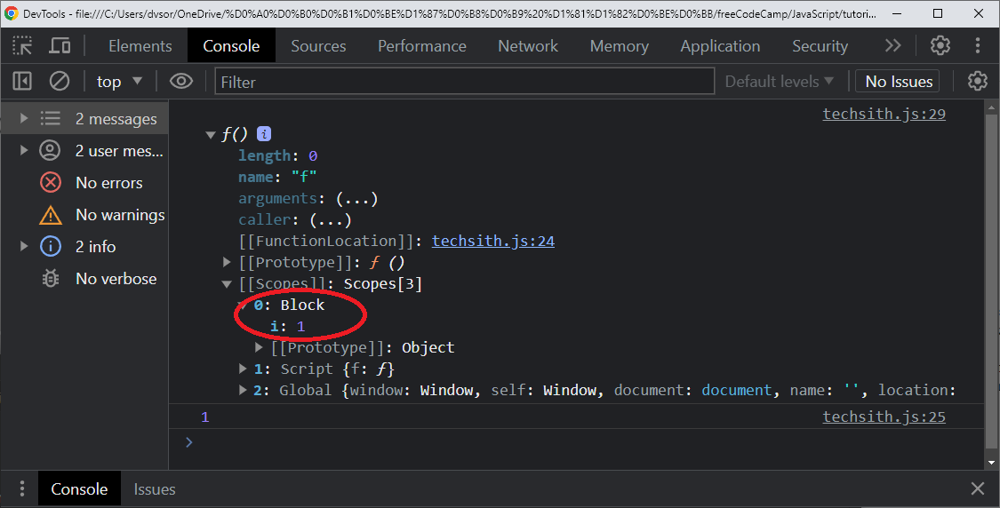

Data types and variables
JavaScript provides seven different data types:
undefined, null, boolean, string, symbol, number, and objectUndefined is something that hasn't been defined; you may have a variable that you havent set to be anything yet.
var userName;
console.log(userName); // undefined
userName = Dima;
Null is nothing; So you have set this to be something and that thing is "nothing". So, you can say this is "mull" or nothing.
An object can store a lot of different key: value pairs:
obj_1 = {
name: 'Dima',
age: 51,
nationality: 'Ukraine',
}
Variables
A variable allows computer to store and manipulate data in a dynamic fashion. It's basically a label to point to the data.
var myName = "Beau";
console.log(myName); // Beau
myName = Dima;
console.log(myName); // Dima
I also have to apply it somewhere I have to make something use thar class. So for this <div> clalss=silver-background:
let ourName = "freeCodeCamp";
const pi = 3.14;
The difference between var, let, and const: a var is going to be able to be used throughout your whole program (global scope). Let will only be used within the scope of where you declare that. Const is a variable that should never change.
The remainder operator % gives the remainder of the divesion of two numbers
var remainder;
remainder = 11 % 3; // 2
console.log(`remaimder of the division 11 by 3 is ${remainder}`);
and 11 divided by 3 is 9; 11 minus 9 is 2. So the remainder is going to be 2. The remainder operator is often used to determine if a number is even or odd. If you can divide a number by 2 and the remainder is 0, that meana the number is ewen.
Compound Assignment with Augmented addition / subtraction
let a = 3;
let b = 17;
let c = 12;
a = a + 12;
a += 12;
b = b - 9;
b -= 9;
c = c - 7;
c -= 7;
console.log(`a = ${a}; b = ${b}; c = ${c}`);
Compound Assignment with Augmented multiplication and division
let a = 5;
let b = 12;
let c = 4.6;
a = a * 5;
a *= 5;
b = b / 3;
b /= 3;
c = c / 2.3;
c /= 2.3;
console.log(`a = ${a}; b = ${b}; c = ${c}`);
So another way of just dividing the variable by a new number and assigning that answer to the variable
Strings
var firstName = "Alan";
var lastName = 'Turing';
var fullName = `${firstName} ${lastName}`; // using a template string
console.log(fullName);
Escaping Literal Quotes in Strings
Sometimes your string contains the quote symbol. Normally the quotes identify the beginning and the ending of the string. If we put a backslash \ before each of these quotation marks, JavaScript no longer interprets as being the last charecter in the string.
let myStr = "I am a \"double quoted\" string inside \"double quotes\""; // Eacaping Literal quotes in Strings
console.log(myStr);
Quoting Strings with Single Quotes
Instead of having your string start with double quotes have it start with a single quote.
let myStr = "<a href=\"http://www.example.com\" target=\"_blank\">Link</a>";
Now I can remove all of these escape characters from inside the string here.
let myStr = '<a href="http://www.example.com" target="_blank">Link</a>';
Now you can see that Javacript still knows that this is a string even though it has these double quotes inside. An additional thing you can do is use backticks; if I put backticks before - at the beginning and at the end of the string, now I can use single quotes and double quotes in the string:
let myStr = `<a href="https://www.freecodecamp.org/" target="_blank">Link</a>`;
Escape Sequences in Strings
There's actually quite a few other things you can escape out.
/*****
CODE OUTPUT
\' single quote
\" double quote
\\ backslash
\n newline
\r carriage return
\t tab
\b backspace
\f form feed
*****/
var myStr = "FirstLine\n\t\\SecondLine\nThirdLine"
console.log(myStr);
Constructing Strings with Variables
var ourName = "freeCodeCamp";
var ourStr = "Hello, our name is " + ourName + ", how are you?"
console.log(ourStr);
var myName = "Dima";
var myStr = "My name is " + myName + " and I am well!"
Appending Variables to Stringss
You can append variables to strings with this += operator
var anAdjective = "awesome!";
var ourStr = "freeCodeCamp is ";
ourStr += anAdjective;
var someAdjective = "worthwhile";
var myStr = "Learning to code is ";
myStr += someAdjective;
Find Length of String
You can just use the .length property to find the length, it will return an integer, a number that has the number of characters in the string.
var firstNameLength = 0;
var firstName = "Ada";
firstNameLength = firstName.length;
console.log(`length of ${firstName} is `, firstNameLength);
Bracket Notation to Find First Character in String
Bracket Notation is a way to get a character at a specific index within a string. Most modern programming languages like JavaScript don't start counting at 1 like humans do. They start at 0 which is called "Zero-based Indexing". So, with the number 0, that refers to first index of the string which would be the "A"
var firstLetterOfFirstName = "";
var firstName = "Ada";
firstLetterOfFirstName = firstName[0];
console.log(`First letter of string "${firstName}" is `, firstLetterOfFirstName);
var lastLetterOfLastName = "";
var lastName = "Lovelace";
lastLetterOfLastName = lastName[lastNameLength - 1];
console.log(`Last letter of string "${lastName}" is `, lastLetterOfLastName);
String Immutality
Strings are immutable, meaning they cannot be altered once created. We can still change this to "Hello World" but we can't just change an individual letter like that.
var myStr = "Jello World";
myStr[0] = "H"; // Fix Me
console.log(myStr);
we're going to type in the whole string:
myStr = "Hello World";
And now, it will change to the "Hello World"
Bracket Notation to Find N-th Character in String
You can use bracket notation to get any character position in a string.
var firstName = "Ada";
var secondLetterOfFirstName = firstName[1];
var lastName = "Lovelace";
var thirdLetterOfLastName = lastName[2];
Word Blanks
In a Mad Lib game you are provided sentences with some missing words like nouns, verbs, adjectives, and adverbs
// Word Blanks
function wordBlanks(myNoun, myAdjective, myVerb, myAdverb) {
// Your code below this line
var result ="";
result += "The " + myAdjective + " " + myNoun + " " + myVerb + " to the store " + myAdverb;
// Your code above this line
return result;
}
// Change the words here to test your function
console.log(wordBlanks("dog", "big", "ran", "quickly"));
console.log(wordBlanks("bike", "slow", "flew", "slowly"));
we're going to type in the whole string:
Store Multiple Values with Arrays
Arrays allow you to store several pieses of data in one place. Arrays always start with a bracket and then end with a bracket to show the beginning and the ending of the array. And every element in the array is separated by a comma. The elements can be any data type.
// Example
var ourArray =["John", 23];
// Only change code below this line
var myArray = ["Quincy", 1];
Nested Arrays
When one of the elements in an array is another array, that's called a nested array or a multidimensional array.
var ourArray = [["the universe", 42], ["everything", 101010]];
var myArray = [["Bulls", 23], ["White Sox", 45]];
Acess Array Data with Indexes
Earlier we learned how to use bracket notation to find a specific index in a string. You can do the same thing with arrays.
var ourArray = [50, 60, 70];
var ourData = ourArray[0]; // equals 50
// Setup
var myArray = [50, 60, 70];
var myData = myArray[1]; // equals 60
console.log(myData);
Motify Array Data With Indexes
You can use array indexes to modify arrays. We've tried to do this earlier with strings using bracket notation and we were not able to modify a string using bracket notation. But with arrays, you can.
var ourArray = [18, 64, 99];
ourArray[1] = 45; // ourArray now equals [18, 45, 99]
Acess Multi-Dimensional Arras With Indexes
You can also use bracket notation to select an element in a multi-dimensional or array of arrays. This is a three-layer deep array right here.
var myArray = [[1,2,3], [4,5,6], [7,8,9], [[10,11,12], 13, 14]];
var myData = myArray[0][0]; // equals 1
let newData = myArray[2][1]; // equals 8
newData = myArray[3][0][2]; // equals 12
newData = myArray[3][2]; // equals 14
the first bracket is [0] that's going to get the first element in the bigger array which will be [1,2,3]. And then that element is an array. So the second bracket would be the index of the array within the array. So that [1] will point to 2. Let's try to figure out how can we select a value equal to 8.
Manipulate Arrays with push()
You can append data to the end of an array with the push() function.
var ourArray = ["Stimpson", "J", "cat"];
ourArray.push(["happy", "joy"]);
// ourArray now equals ["Stimpson", "J", "cat", ["happy", "joy"]]
var myArray = [["John", 23], ["cat", 2]];
myArray.push(["dog", 3]);
// myArray now equals [["John", 23], ["cat", 2], ["dog", 3]]
Manipulate Arrays with pop()
We can remove an item from an array with the pop() function here.
var ourArray = [1,2,3];
var removedFromOurArray = ourArray.pop();
// removedFromOurArray now equals 3, and ourArray now equals [1,2]
var myArray = [["John", 23], ["cat", 2]];
var removedFromMyArray = myArray.pop();
// removedFromMyArray now equals ["cat", 2], and myArray now equals ["John", 23]
You see that ourArray.pop() And then we know it's a function because of the parenthesis at the end of word "pop". It's going to remove the last element which is 3 and then it's going to put it right into this variable here removedFromOurArray. And then ourArray is going to equal [1,2] because the 3 has been popped off.
Manipulate Arrays with shift()
The shift() function is very similar to the pop() function except it removes the first element of the array instead of the final element.
var ourArray = ["Stimpson", "J", ["cat"]];
var removedFromOurArray = ourArray.shift();
// removedFromOurArray now equals "Stimpson" and ourArray now equals ["J", ["cat"]]
Manipulate Arrays with unshift()
The unshift() function is similar to the push() array function. While push() adds an element to the end of the array, unshift() adds an element to the beginning of the array.
var ourArray = ["Stimpson", "J", "cat"];
ourArray.shift(); // ourArray now equals ["J", "cat"]
ourArray.unshift("Happy");
// ourArray now equals ["Happy", "J", "cat"]
console.log(ourArray);
myArray = [["John", 23], ["dog", 3]]
myArray.shift();
myArray.unshift(["Paul", 35]); // [["Paul", 35], ["dog", 3]]
Shopping List
Let me give you another example of nested arrays. This will be a shoppong list. Inside this array we're going to have another array. And we're going to have items: "Cereal" - how many boxes? - 3 boxes; we also need some milk - two cartoons of milk; Let's get some bananas... And now we've created an array of arrays which is our shopping list.
div>
var myList = [["cereal", 3], ["milk", 2], ["bananas", 3], ["juice", 2], ["eggs", 12]];
Write Reusable Code with Functions
Functions allow us to create reusable code in JavaScript. This is how a function is set up: we have the word "function", then we have the function name; there's always parenthesis here and you can pass information into parenthesis. And then we have these curly brackets: the opening bracket And everything iside the curly bracketsv is run anytime the function is called or invocked.
function ourReusableFunction() {
console.log("Heyya, World");
}
Here the function is being called by just putting the function name with the parenthesis after the name.
ourReusableFunction();
Every time this function is called, just like this, the console is going to say "Heyya, World". So now I'm going to create my own function that's going to be very similar
Passing Values to Functions with Arguments
Parameters are variables that act as a placeholders for the values that are to be input to a function when it is called. We have defined a function below called ourFunctionWithArgs(). And inside the paranthesis we put the letters (a, b). These could be any name,- we could call these anything, not just (a, b), - they can really be any words up here. And that means that when the function is called we're going to pass data into the function, or input data into the function. You can see the example here we're calling the function; and instead of saying (a, b) in parenthesis, we're actually passing the values (10, 5).
function ourFunctionWithArgs(a, b) { console.log(a - b); } ourFunctionWithArgs(10, 5); // Outputs 5When the function runs, it can use the information that's passed into the function.
Global Scope and Functions
Scope refers to the visibility of variables. Variables which are defined outside of a function block have global scope. Global scope means they can be seen everywhere in your Javacript code. For instance, I'm going to declare a variable called myGlobal, I'll set it to 10. Since this is set outside of a function, we can see it anywhere in the whole code, Even in this function right here called fun2(). We're checking if the type of myGlobal does not equal "undefined"; So, it will not uqual "undefined" if it has been defined and the program knows about the variable. Since this is a global scope, it does not equal "undefined", - it equals 10. Since this function can access the myGlobal variable, it will run what's in this "if"-statement where we just add to this output variable, myGlobal. Below is another example, where we're going to see if the type of oopsGlobal equal "undefined". Well, we're going to set that in the function fun1(). It is possible to set a variable without using the "var" keyword; so, I'm going to set this to oopsGlobal = 5. Normally, if you do use a "var" keyword, since this is within a function, it will be scoped to that function. If we have the "var" heyword here in fun1(), this would be scoped to this function, so you would not able to see it in the global scope and in function fun2(). However, since we forgot to put the "var" keyword in this example, - there's no "var" keyword, it was created in the global scope automatically( by JavaScript ). That means you can access it anywhere else in the program. Byt if we put the "var" keyword in fun1() ( var oopsGlobal = 5; ), then oopsGlobal would equal "undefined" in the scope of fun(2) and we would newer have this line `output += " oopsGlobal: " + oopsGlobal;` in the output.
div>
// Declare your variable here
var myGlobal = 10;
function fun1() {
// Assign 5 to oopsGlobal Here
oopsGlobal = 5; // It is possible to set a variable without using the "var" keyword; If we have the "var" heyword here, this would be scoped to this function
}
// Only change code above this line
function fun2() {
var output = "";
if (typeof myGlobal != "undefined") {
output += "myGlobal: " + myGlobal;
}
if (typeof oopsGlobal != "undefined") {
output += " oopsGlobal: " + oopsGlobal;
}
console.log(output);
}
fun1();
fun2();
However, since we did not put the "var" keyword in `oopsGlobal = 5;` statement, and this will be added to the output: oopsGlobal and then the colon 5. So when we console.log the output it's going to say `myGlobal: 10 oopsGlobal: 5`
Local Scope and Functions
Variables which are declared within functions as well as the function parameters have local scope. That means they're only visible from within the function.
div>
function myLocalScope() {
var myVar = 5; // we've declared this variable inside a function.
console.log(myVar); // So, this variable, myVar is only visible inside the function.
}
myLocalScope();
console.log(myVar); // script.js:59 Uncaught ReferenceError: myVar is not defined
But then the program is going to run this last console.log(myVar) that's outside of the function. It's still going to try to access "myVar", you can see in the console that first there's 5, because it console.log(myVar) within the function, then there's an error because it tried to access myVar outside of the function.
Global vs Local Scope in Functions
It is possible to have both local ang global variables with the same name. When you do this, the local variable take precedent over the global variable. Here we have a function called outerWear() that's going to return outerWear. That's this variable up here; this is a global variable because it is declared outside of the function. So, when we console.log the output of the myOutfit() function, the myOutfit() function is going to return outerWear which is the word "T-Shirt". However, let's put var outerWear = "sweater" in the body of a function:
div>
var outerWear = "T-Shirt";
function myOutfit() {
var outerWear = "sweater";
return outerWear;
}
console.log(myOutfit()); // "sweater"
console.log(outerWear); // T-Shirt"
Now if I run this program you can see in the console it's going to say "sweater" instead of "T-Shirt". It's because this local variable outerWear took precedence over the global variable. Another interesting thing about this, if I do a console.log(outerWear) we'll see that it's still "T-Shirt". So, first you see in the console it says "sweater" and "T-Shirt". So, first we console.log this function which returns "sweater". And then we console.log the global variable which is "T-Shirt".
Return a Value from a Function with Return
You can return a value from a function with this "return" statement. So, we have this function here. Ant we're passing a number into it - the "num"; and then it's going to return whatever is after the "return" keyword. In this case num - 7
function minusSeven(num) {
return num - 7;
}
console.log(minusSeven(10)); // 3
Let's create another function. This function is going to be called timesFive(); again, we pass in a number. And it's just going to return the (num * 5)
function timesFive(num) {
return num * 5;
}
console.log(timesFive(5)); // 25
Understanding Undefined Value Returned from a Function
Functions can have "return" statements, but they don't have to. In this case, this function adds 3 to the "sum" variable which is a global variable because it's defined before the function. It does not return anything. So, if you don't specify a return value, the return value is just undefined.
var sum = 0;
function addThree() {
sum = sum + 3;
}
console.log(addThree(4)); // undefined
Now I'm going to create another function that is similar. And this time we'll just do sum = sum + 5; Or we can shorten this to use +=; So now that's going to add 5 to the "sum" also, but it's not going to return anything.
function addFive() {
// sum = sum + 5;
sum += 5;
}
console.log(addFive(3)); // undefined
So, if we log this out, it would be "undefined"
Assignment with a Returned Value
It's simple to assign a returned value to a variable. See right here we have a function change(). And you pass in a number and it's going to return the result of this mathematical expression. When we call the function change() and pass in the 10, the value that is returned from this function is going to be stored in this variable named "changed" here.
var changed = 0;
function change(num) {
return (num + 5) / 3
}
changed = change(10);
console.log(changed);
We can do the same thing down here. First we initialize the variable "processed" and function processArg is going to return the result of this mathematical expression. So, I can set "processed" to equal what this function returns: I can say: "processArg(" and then I just pass in the number 7 here:
var processed = 0;
function processArg(num) {
return (num + 3) / 5
}
processed = processArg(7)
console.log(processed);
And now "processed" equals the result of the mathematical expression.
Stand in Line
In computer science a queue is an abstract data structure where items are kept in order. New items can be added to the back of the queue and old items are taken off from the front of the queue. We're going to simulate that right now some of the functionality of the queue using this nextInLine() function. The purpose of this is to show that in this nextInLine() function you can add an item to the array that's passed in. And then it's going to return the first item on the list. For instance, if we have this array right here, if we add an item to this array it should come after at the end. So, it should come after 5. And then it should return the first item on the list. In this case, it's 1; so, you see, we had some console.log set up, it should show what the list looks like, the array looks like beforehand. And then show what it looks like aftrwards. This JSON.stringify() is just a way to chanqe an array into a string that can easily be printed out to the screen. To do this, we're just going to go two things that we've learned about already. The first thing is to add the item onto the list. So we see right here, nextInLine() passed in the "testArr" and 6. So, we're calling this function nextInLine(), we're passing in this testArr here, and the number 6. We want the number 6 to be added to the end of the array. So, we'll just do "arr.push(" an then I'll put in "item". So what we did, we took this array that was passed in here which is in this case, testArr. And we push the item that was passed in. Now we want to return the first item on the list. We want to remowe and return this item, so, that we console.log here it should return the number 1. So, instead of returning "item", I'm going to return arr.shift(). That what shift does. Shift() removes the first item and returns that first item.
function nextInLine(arr, item) {
// Your code here
arr.push(item);
// return item;
return(arr.shift());
}
var testArr = [1,2,3,4,5];
console.log("Before: " + JSON.stringify(testArr)); // Before: [1,2,3,4,5]
console.log(nextInLine(testArr, 6)); // 1
console.log(`After: ${JSON.stringify(testArr)}`); // After: [2,3,4,5,6]
Let's check it; okay, before it's [1,2,3,4,5]; then we've popped of the "1" and after it is [2,3,4,5,6]
Boolean Values
Booleans are another data type in JavaScript. There are only two values: true or false. They're basically on/off switches where "true" is on and "false" is off. They don't use quotation marks around the Boolean. See, it just says "return false". So, this is a function here, where it's going to return "false" when you call this function.
function welcomeToBooleans() {
return false;
}
It could also be true. So we could return "true":
function welcomeToBooleans() {
return true;
}
You can use "true" and "false" in more places than just function returns.
Use Conditional Logic with If Statements
An "if"-statement is used to make decisions in code. The keyword "if" tells Javacript to uxecute the code in the curly braces under cetrain conditions definedin the parenthesis. Here is a full "if"-statement, there's always parenthesis after the keyword "if" in which is a codition. So, if the stuff inside these parenthesis evaluates to "true", then the code inside the following curly braces will be evaluated or run. In this case it is a variable, - so, if the "isItTrue" varuable is "true", it will return "Yes, it's true". Now if this is not true, then we'll get to the second return statement "No, it's false". This whole function here takes in a variable an we check if that's true or not.
function ourTrueOrFalse(isItTrue) {
if (isItTrue) {
return "Yes, it's true";
}
return "No, it's false";
}
console.log(ourTrueOrFalse(true));
Comparison with the Equality Operator
There are many comparison operators in JavaScript that will returen a Boolean of "true" or "false". The most common is the equality operator "==" and it is often used in an "if"-statement. Now, to check if it equals 12, we're going to have to use the double equal sign == that is the equality operator and we'll say: "if (val == 12)". The reason why we can't use the single equal sign is that the single equal sign is the assignment operator.
function testEqual(val) {
if (val == 12) {
return "Equal";
}
return "Not Equal"
}
console.log(testEqual(10));
Comparison with the Strict Equality Operator
"===" The difference is that equality operator "==" attempts to convert both values being compared to a common type, while the strict operator "===" does not do the type conversion.
3 == 3; // true
3 == '3'; // true because the string would be converted to a number
3 === 3; // true
3 === '3'; // false
Practice Comparing Different Values
function compareEquality(a, b) {
if (a === b) { // Change this line
return "Equal;";
}
return "Not Equal;";
}
// Change this value to test
console.log(compareEquality(10, "10"));
Comparison with the Inequality Operator
I'm going to do the Inequality operator with an exclamation point and an equal sign !=
And again, just like the equality operator, this does type conversion.
.0
function testNotEqual(val) {
if (val != 12 ) {
return "Not Equal!";
}
return "Equal"
}
console.log(testNotEqual(10));
Strict Inequality Operator !==
The strict Inequality operator !== is basically the opposite of the srict equality operator ===
function testStrictNotEqual(val) {
if (val !== 17) {
return "Strict Not Equal!";
}
return "Equal";
}
console.log(testStrictNotEqual(10));
Comparisons with Logical And operator
We can also use the graater than ">" operator.
function testGreaterThan(val) {
if (val > 100) {
return "Over 100";
}
if (val > 10) {
return "over 10";
}
return "10 or Under"
}
console.log(testGreaterThan(10));
Comparison with the Greater Than Or Equal To Operator
We can also use greater then or equal to operator ">="
function testGreaterOrEqual(val) {
if (val >= 20) {
return "20 or Over";
}
if (val >= 10) {
return "10 or Over";
}
return "Less than 10";
}
console.log(testGreaterOrEqual(10));
Comparison with the Less Than Or Equal to Operator
We also have the "less than or equal to" operator "<="
function testLessOrEqual(val) {
if (val <= 12) {
return "Smaller or Equal to 12";
}
if (val <= 24) {
return "Smaller or Equal to 24";
}
return "More Than 24";
}
console.log(testLessOrEqual(10));
Comparisons with the Logical "and" (&&) Operator
Sometimes you want to check if two things are true at the same time. For instance, you may want to check if this value is less than or equal to 50 and you also want to check if the value is more than or uqual to 25. So, here we have a nested "if"-statement.
function tesrLogicalAnd(val) {
if (val <= 50) {
if (val >= 25) {
return "Yes";
}
}
return "No";
}
console.log(tesrLogicalAnd(10));
But there's an easier way to do this. I'm going to copy this "val >= 25", and I'm going to delete this nested "if"-statement. And I'm going to use the "And" operator: if I put two ampersands && that means logical "and", now I'm going to put the seconf condition afterwards. So, this says: "if value is less than or equal to 50 and the value is also more than or equal 25", then we're going to return "Yes". So, both this statement and this statement have to be true to get inside this "if"-statement here:
function tesrLogicalAnd(val) {
if (val <= 50 && val >= 25){
return "Yes !";
}
return "No !";
}
console.log(tesrLogicalAnd(37));
Comparisons with the Logical "or" (||) Operator
In this code here, we're checking if the value is not between 10 and 20
function tesrLogicalOr(val) {
if (val < 10) {
return "Outside";
}
if (val > 20) {
return "Outside";
}
return "Inside"
}
There is an easier way to do this with logical "Or" operator which is just two pipes ||:
function tesrLogicalOr(val) {
if (val < 10 || val > 20) {
return "Outside";
}
return "Inside"
}
console.log(tesrLogicalOr(15));
So, now we are checking if the value is less than 10 or if the value is more than 20. Ether way, we're going to return "Outside", and if not true, we'll return "Inside"
Else Statements
When an "if"-statement is true, normally the block of code right after the "if"-statement will be evaluated. And if it's not true, nothing happens. But with an "else" statement, an alternate block of code can be executed when it's not tue. So this is a perfect use case. If value is more than 5, the result is "Bigger than 5", if the value is less or equal to 5, the result is "5 or smaller":
function testElse(val) {
var result = "";
if (val > 5) {
result = "Bigger than 5";
}
if (val <= 5) {
result = "5 or Smaller"
}
return result;
}
We can do this with "else" statement. So, I'm just going to type is "else" here and then we can just delete this whole if-statement:
function testElse(val) {
var result = "";
if (val > 5) {
result = "Bigger than 5";
} else {
result = "5 or Smaller"
}
return result;
}
Else If Statements
If yiu have multiple conditions that need to be adressed, you can use "else if" startements. It's a way of chaining "if"-statements together. In this example, we have three conditions.
function testElseIf(val) {
if (val > 10) {
return "Greater than 10";
}
if (val < 5) {
return "Smaller than 5";
}
return "Between 5 and 10";
}
function testElseIf(val) {
if (val > 10) {
return "Greater than 10";
} else if (val < 5) {
return "Smaller than 5";
} else {
return "Between 5 and 10";
}
}
console.log(testElseIf(7));
Logical Order in If Else Statements
When you're using "else if"-statements order is very important. Let's look at this example here. In this function, first we check if the value is less tharn 10 and return "Less than 10",
function orderMyLogic(val) {
if (val < 10) {
return "Less than 10";
} else if (val < 5) {
return "Less than 5";
} else {
return "Greater or equal to 10";
}
}
// Change this value to test
console.log(orderMyLogic(3));
If we look at this example and we pass in the number 7, if I run this, you'll see it's going to say "Less than 10" which is what we want. However, if we put 3 it's still just going to say "Less than 10". Really, we want this to say "Less than 5" because it is actually less than 5. However, this is in the wrong order. So, what we need to do is change the order.
function orderMyLogic(val) {
if (val < 5) {
return "Less than 5";
} else if (val < 10) {
return "Less than 10";
} else {
return "Greater or equal to 10";
}
}
// Change this value to test
console.log(orderMyLogic(3));
So, once he first condition is met, it doesn't even check for the rest of the conditions. That's why it's important to think about the order. If we run this now, - yeah "Less than 5". That's what we want.
Chaining If Else Statements
You can also chain "if"- and "else if" statements.
function testSize(num) {
if (num < 5) {
return "Tiny";
} else if (num < 10) {
return "Small";
} else if (num < 15) {
return "Medium";
} else if (num < 20) {
return "Large";
}
return "Huge"
}
console.log(testSize(5));
/*
Write chained if/else if statements to fulfil the following conditions:
num < 5 - return "Tiny"
num < 10 - return "Small"
num < 15 - return "Medium"
num < 20 - return "Large"
num >= 25 - return "Huge"
*/
Golf Code
In the game of golf each hole has a par hwich means average number of strokes you're supposed to use to get the ball into the hole. So, depending on how far above or below par your strokes are, there's a different nickname. Here are some niknames: "Hole-in-one", "Eagle", "Bride", "Par", "Double Bogey", and we're going to write a function where you pass in the par and you also pass in the strokes. And it's going to return the nickname. You can see this table here shows what we have to do, if the strokes are 1, then you get "Hole-in-one!", if the srtokes is less than or equal to par-2, you get an "Eagle" and so on. And we also have this array that's going to make it easier because we can just use things from this array instead of typing out the words. So, we're going to start with an "if"- statement and then we have to put the condition: "if (strokes == 1) " that's the equality operator, then we can return "Hole-in-one", but we can just use it from this "names" aray: it's going to be names[and this is going to be index zero of the array]. So, we'll do "names[0]" and then we can do the "else if"
var names = ["Hole-in-one!", "Eagle", "Bridie", "Par", "Bogey", "Double Bogey", "Go Home!"];
function golfScore(par, strokes) {
if (strokes == 1) {
return names[0];
} else if (strokes <= par - 2) {
return names[1];
} else if (strokes == par -1) {
return names[2];
} else if (strokes == par) {
return names[3];
} else if (strokes == par + 1) {
return names[4];
} else if (strokes == par + 2) {
return names[5];
} else if (strokes <= par + 3) {
return names[6]}
}
console.log(golfScore(5,4)); // "Bridie"
/*
Strokes Return
1 "Hole-in-one!"
<= par - 2 "Eagle"
par - 1 "Bridie"
par "Par"
par + 1 "Bogey"
par + 2 "Double Bogey"
>= par + 3 "Go Home!"
*/
Switch Statements
Instead of using chained "else - if" statements you can use a "swithch" statement. A "switch" statement tests a value and can have many "case" statements which define various possible values. Here we're going to write a "switch" statement wich tests val and sets the answer for the following conditions: if we pass in "1", the answer should be "alpha"; if we pass in "2", the answer should be "beta" and so on. We'll just type in the word "switch" - that's the keyword here, and we're testing the "val" that's passed into this function, It starts off kind of like an "if"-statement, - we're going to compare the "val" to the different cases that we have. So, we'll have "case" and the first number is going to be 1. Here we're saying if the case of val is 1, if val equals 1 and it's using the strict equality operator, so it's like the ===, it's going to make sure that the type of the variable are the same; so, a string '1' and a number 1 will not be equal. But if the case is 1, then we're going to set answer = "alpha"; and then we're going to "break". "Break" means that we're at the end of that "case"-statement. And once you break it, it just goes to the end of the switch statement and doesn't evaluate anythind else in the switch statement. So, we're also going to have "case 2:", the answer is going to be "beta", and then we also need a "break" statement. If you don't have a "break" statement it will just run through to the next "case" ctatement automatically. So, if the case was 1 and you did not have a break here, first it would set the answer to "alpha", and then it would set the answer to "beta". It would just skip over to the next case statement. But since the "break" is here, it's going to go out of the "switch" statement completely; so, it would go - start running the code after this last curly bracket.
function caseInSwitch(val) {
var answer = "";
switch(val) {
case 1:
answer = "alpha";
break;
case 2:
answer = "beta";
break;
case 3:
answer = "gamma";
break;
case 4:
answer = "delta";
break;
}
return answer
}
console.log(caseInSwitch(1));
/*
Write a "switch" statement wich tests val and sets the answer for the following conditions:
1 - "alpha"
2 - "beta"
3 - "gamma"
4 - "delta"
*/
Default Option in Switch Statements
The sefault option in a "switch"-statement is kind of like "else" in an "if else" statement. Here is a switch statement that's very similar to the one we already saw. And it's inside the function where we pass in a value into the function. But what if we pass in something else? If I pass in the number 2 here it's going to return an empty string. That's beacuse the answer is set to an empty string and we newer owerride the answer here.
function switchOfStuff(val) {
var answer = "";
switch (val) {
case "a":
answer = "apple";
break;
case "b":
answer = "bird";
break;
case "c":
answer = "cat";
break;
default:
answer = stuff;
break;
}
return answer;
}
// Change this value to test
console.log(switchOfStuff("a"));
What if we want to return something anytime a, b, or c is not passed through. So, for anythind else that's passed into the function, we're going to do "default". This is like "else" statement. So, the "default:" we're going to "answer = "stuff"". Again, we're going to have the "break".
Multiple Identical Options in Switch Statements
Sometimes you want a "switch" statement where multiple inputs give the same output. Well, that's easy enough by omitting the "break" statement. In this case we want the case of 1, 2, and 3 all to return the answer of "low". So i can do "case:1" and then I can go straight into "case 2:" and then "case 3:". And since I don't have any "break" statement between these cases, it would just keep going to the next one automatically. And now, I'm going to say that the answer is going to be set to equal "Low".
function sequentialSizes(val) {
var answer = "";
switch (val) {
case 1:
case 2:
case 3:
answer = "Low";
break;
case 4:
case 5:
case 6:
answer = "Mid";
break;
case 7:
case 8:
case 9:
answer = "Hight";
break;
}
return answer;
}
console.log(sequentialSizes(5));
Replacing If Else Chains with Switch
Sometimes a "switch" statement can be easier to write and easier to understand than a chain of "if else" statements. We're going to change this chain of "else if" statements to become a switch statement.
function chainToSwitch(val) {
var answer = "";
// Only change cosde below this line
if (val === "bob") {
answer = "Marley";
} else if (val === 42) {
answer = "The Answer";
} else if (val === 1) {
answer = "There is no #1";
} else if (val === 99) {
answer = "Missed me by this much!";
} else if (val === 7) {
answer = "Ate Nine"
}
// Only change code above this line
return answer;
}
function chainToSwitch(val) {
var answer = "";
// Only change code below this line
switch (val) {
case "bob":
answer = "Marley";
break;
case 42:
answer = "The Answer";
break;
case 1:
answer = "There is no #1";
break;
case 99:
answer = "Missed me by this much!";
break;
case 7:
answer = "Ate Nine";
break;
}
// Only change code above this line
return answer;
}
console.log(chainToSwitch(99));
Returning Boolean Values from Functions
Here's a little trick when you want a function to return a Boolean, a true or false value.
function isLess(a, b) {
// Fix this code
if (a < b) {
return true;
} else {
return false;
}
}
You may remember from before the all comparison operators return a Boolean true or false value. So instead of using this "if"-statement here we can just - we can actually delete all of this and just return the result of this, return - we're just returning the result of (a < b). And we can just skip that whole "if"-statement logic and return this.
function isLess(a, b) {
// Fix this code
return (a < b);
}
// Change these values to test
console.log(isLess(10, 15));
Returning Early Pattern from Functions
You can return early from a function with the "return" statement. So, if you see this function right here, we return at the very end of the function, so it leaves the function and returns this value from the function. But you can leave the function any time with "return" statement. We're going to modify this function so that if a or b are less than 0 the function will immediately exit with the value of "undefined".
// Setup
function abTest(a, b) {
// Only change code below this line
if (a < 0 || b < 0) {
return undefined;
}
// Only change code above this line
return Math.round(Math.pow(Math.sqrt(a) + Math.sqrt(b), 2));
}
console.log(abTest(12, 62));
В JS, для отрицательных чисел квадратный корень вычислить нельзя, поэтому Math.sqrt возвращает NaN.
console.log(Math.sqrt(-4)); // NaN
Counting Cards
We are going to create a blackjack card counting function. So, how card counting works, at least how this function is going to work,
is that when you see a low card, the count goes up. And when you see a high card, the count goes down. And if it's a middle value
card, the count stays the same. And then, when the count is positive, the player should bet high. And when the count is a zero or
negative, the player should bet low.
We are going to use a switch statement to figure out what card has been passed in and
what to do about it. You can see that the function looks like this:
"cc()" and we pass in "card". And depending on what the card is, it's going to increase this global count variable or it's going to
decrease it, or it's going to stay the same. And then we are going to return two things: we're not going to return "Change Me", we
re going to return the current count value and whether the player should hold or bet. So every time you call the cc() functoin
it's going to change this "count" value and return the total "count". So, let's see how this is going to work. We are going to use
"switch"-statement and we're going to check the card value that was passed in. If the case is 2, 3, 4, 5, 6, we are going to increment
the "count" variable, - we're going to do like this: "case 2:" and I'm going to some copying and pasting for cases of 3, 4, 5, 6...
Now there are many ways to write any program, this could be done wit "if"- statements and "else"-statements. So, if the case is
2, 3, 4, 5, or 6, we are going to take the "count" value and increment it by 1 with ++ operator, and we are going to break. If the case
is 7, 8, 9, - actually, we're going to do nothing, the count is not going to change at all; so, we don't even need case 7, 8, or 9.
So, instead of doing 7, 8, 9, we just need to check in the case that something is actually going to happen. So we are going to decrement
the "count" variable if we have 10, Jack, Queen, King or Ace, - in this case, we're going to decrement the count, so, we're going
to do "count--" (that's the same as count = count - 1). And then we will break.
Now we've taken care of the count and updating the "count", now we have to care of what we're going to return.
We are going to return the "count". And we're also going to return whether we are going to hold or bet. So, we're going to actually
return a variable, but first there's going to be a space between the number and then we're going to return the "holdbet" variable.
But this is a variable we haven't created yet. Normally, this would be the perfect time to use the ternary operator
const age = 26;
const beverage = age >= 21 ? "Beer" : "Juice";
console.log(beverage); // "Beer"
var count = 0;
function cc(card) {
switch(card) {
case 2:
case 3:
case 4:
case 5:
case 6:
count++;
break;
case 10:
case "J":
case "Q":
case "K":
case "A":
count--;
break;
}
var holdbet = 'Hold';
if (count > 0) {
holdbet = 'Bet';
}
// return "Change Me"
return count + " " + holdbet;
}
cc(2); cc(3); cc(7); cc('K'); cc('A');
console.log(cc(4));
In this case, we're going to bet because we had a bunch of positive numbers, and then negative numbers, but if we change this '3' to 'K' and we change this '7' to '10', let's see what happens.
count = 0;
cc(2); cc('K'); cc(10); cc('K'); cc('A');
console.log(cc(4)); // -2 Hold
Now, we're gonna hold. Okay, it worked.
Build JavaScript Objects
Objects are similar to arrays except that instead of using indexes to access data, you use properties. Here's an object called "ourDog". Objects are going to be defined with these curly braces at the begining and the end. And these are the properties; the properties are everything before the colons ":" so, we have "name" that's a property, "legs" is apropery. And then the values are the things after the colons here. So, the name is "Camper", the legs - 4, tails, there's only one tail on this dog; and "friends" are "everything!".
var ourDog = {
"name": "Camper",
"legs": 4,
"tails": 1,
"friends": ["everything!"]
};
// Only change code below this line.
var myDog = {
"name": "Quincy",
"legs": 3,
"tails": 2,
"friends": []
};
You can see that the properties can be strings, they can be numbers, they can be arrays, they can be any datatype in JavaScript. So now we are going to create our own dog.
Accessing Object Properties with Dot Notation
There are two main ways to access a property on an object: dot notation and the bracket notation. So, we have this "testObj" object. and we have "hat" "shirt" and "shoes" properties and we want to find out the value of these properties.
var testObj = {
"hat": "ballcap",
"shirt": "jersey",
"shoes": "cleats"
};
Right here the we have the hatValue we are going to set to testObj, ad then we use the dot notation: we just put a dot or a period and then put the name of the property ".hat". And then for the shirt value, I will do ".shirt"
var hatValue = testObj.hat;
var shirtValue = testObj.shirt;
Accessing Object Properties with Bracket Notation
Besides using dot-notation, you can also use bracket-notation to access a property in an object. You can use bracket notation anytime but it is required if the name has a space in it. In this object we have three properties and each of them have a space. To get the value of these properties we have to use bracket notation. For entreeValue we're going to do "testObj" - that's the name of the object, and then we're going to put brackets kind of like an array index, so, you need the opening and closing brackets, and inside we will put the name of the property.
var testObj = {
"an entree": "hamburger",
"my side": "veggies",
"the drink": "water"
};
// Only change code below this line
var entreeValue = testObj["an entree"];
var drinkValue = testObj['the drink'];
Accessing Object Properties with Variables
Bracket notation can also be used to look up object properties using variables. Here we have this "testObj" object, we have these different numbers associated with these names here. And we are going to set this variable to be the numbers. So, I'll set "var playerNumber = 16" and now we can - in this testObj, 16 is "Montana", - and we can look that up using the variable name instead of the number. So instead of putting 16, I'm going to put [playerNumber] in here:
var testObj = {
12: "Namath",
16: "Montana",
19: "Unitas"
}
var playerNumber = 16;
player = testObj[playerNumber];
And now player is set to the word, the string "Montana". And we use this variable to look up the object property.
Updating Object Properties
Here use dot notation to update object properties, we say: "ourDog.name" and use the assignment operator, the equals sign, to set the name to "Happy Camper":
var ourDog = {
"name": "Camper",
"legs": 4,
"tails": 1,
"friends": ["everything!"]
};
ourDog.name = "Happy Camper"
console.log(ourDog.name); // "Happy Camper"
// Setup
var myDog = {
"name": "Coder",
"legs": 4,
"tails": 1,
"friends": ["freeCodeCamp Campers"]
};
myDog.name = "Happy Coder";
console.dir(myDog);
Add New Properties to an Object
You can add new properties to an object using dot noation or bracket notation. Here we have this object "ourDog", and down here we're adding a new property ".bark":
var ourDog = {
"name": "Camper",
"legs": 4,
"tails": 1,
"friends": ["everything!"]
};
ourDog.bark = "bow-wow";
// Setup
var myDog = {
"name": "Happy Camper",
"legs": 4,
"tails": 1,
"friends": ["freCodeCamp Campers"]
};
myDog['bark'] = "woof!"
Delete Properties From an Object
With the "delete" keyword you can easily delete any property from an object.
var ourDog = {
"name": "Camper",
"legs": 4,
"tails": 1,
"friends": ["everything!"],
"bark": "bow-wow"
};
delete ourDog.bark;
delete myDog.tails;
Using Objects for Lookups
Objects can be thought of a key-value storage like a dictionary. You can use object to lookup values. In this case we have a switch statement that returns certain values. So, when you pass in "alpha" to the function, it returns "Adams".
function phoneticLookup(val) {
var result = "";
// Only change code below this line
switch(val) {
case "alpha":
result = "Adams";
break;
case "bravo":
result = "Boston";
break;
case "charlie":
result = "Chicago";
break;
case "delta":
result = "Denver";
break;
case "echo":
result = "Easy";
break;
case "foxtrot":
result = "Frank";
}
return result;
}
We can replace this switch statement with an object and use the object for lookups instead of switch statement
value = prompt('input a nickname (alpha, bravo, charlie, delta, echo, foxtrot)');
function phoneticLookup1(val) {
var result = "";
// Only change code below this line
var lookup = {
"alpha": "Adams",
"bravo": "Boston",
"charlie": "Chicago",
"delta": "Denver",
"echo": "Easy",
"foxtrot": "Frank",
}
result = lookup[val];
return result;
}
console.log(phoneticLookup(value));
console.log(phoneticLookup("charlie"));
Testing Objects for Properties
You can check if an object has a propery with the ".hasOwnProperty" method. We can finish this
function where we check if an object has a specific property. If it doesn't have the property we'll return "Not found".
We'll do "myObj.hasOwnProperty()" and then we pass in the prorerty we're going to check which is "checkProp". This is either
going to come back as true or false if it has the property. And let's make this into an "if"-statement:
if (myObj.hasOwnProperty(checkProp))
But if that's true, we're going to
"return myObj" and then use bracket notation
"[checkProp]" - so, we're going to return the value of that property. Else we're going to return "Not Found".
var myObj = {
gift: "pony",
pet: "kitten",
bed: "sleigh"
};
function checkObj(checkProp) {
// Your Code Here
if (myObj.hasOwnProperty(checkProp)) {
return myObj[checkProp];
} else {
return "Not Found";
}
}
console.log(checkObj("gift")); // pony
console.log(checkObj("hello")); // Not Found
So, when we pass in "gift" here, we returned "pony". But let's say we pass in "hello", - "Not Found".
Manipulating Complex Objects
A JavaScript object is a way to store flexible data. In object you can store strings, numbers, and arrays, and wven other objects. In this example we have an array called "myMusic". We can see it's an array because we have the open bracket and closed bracket. But inside the array are objects, and inside the objects are all these key:value pairs with strings and the numbers and so on. I'm going to add another object, since this is an array, after each element in array, you have a comma. So, I'm going to add a comma here. And then I'm going to add my next record right below this comment here.
var myMusic = [
{
"artist": "Billy Joel",
"title": "Piano Man",
"release_year": 1973,
"formats": [
"CD",
"8T",
"LP"
],
"gold": true
},
// Add record here
{
"artist": "Beau Carnes",
"title": "Cereal Man",
"release_year": 2003,
"formats": [
"YouTube video",
"freecodecamp.com"
],
"gold": true
}
]
This is wery similar to JSON which we will talk more about later
Accessing Nested Objects
Here ve have an object with other objects nested inside that. So, in order to access sub-properties of an object you can chain together the dot or bracket notation. So, I'm trying to get the gloveBoxContents, and I'll do a "myStorage.car.inside" and, because there's a space here, we have to use bracket notation "["glove box"]"
var myStorage = {
"car": {
"inside": {
"glove box": "maps",
"passenger seat": "crumbs"
},
"outside": {
"trunk": "jack (домкрат)"
}
}
};
var gloveBoxContents = myStorage.car.inside["glove box"];
console.log(gloveBoxContents); // maps
Accessing Nested Arrays
Array bracket notation can be changed to access nested arrays. You can see we have this nested array here. And inside this array are two objects. The first element in the array is this object, the second element in the array is also object, And inside the object we have a key:value pair; the key is "list" and the value is another array here. So, we combine dot notation and bracket notation to access the second tree.
var myPlants = [
{
type: "flowers",
list: [
"rose",
"tulip",
"dandelion"
]
},
{
type: "trees",
list: [
"fir",
"pine",
"birch"
]
}
]
//var secondTree = myPlants[1]["list"][1];
var secondTree = myPlants[1].list[1];
console.log(secondTree);
Record Collection
We're given this object here which is a record collection. Each record has an ID and then also has different pieces of information about the record. They don't all have the same information. But see, we have "album" "artist" "tracks" and so on. And we are supposed to create this "updateRecords()" function where we can pass in the ID, the property, and the value. And it's guing to update our record collection with the property and the value. So, for instance, if we pass in the ID "2468" and we put the property "artist", and if we set the different value, like "Quincy" or something like that, then, we should update this whole object; so now it says "Quincy" instead of "Prince". And we should return the full collection. So, it's going to update the collection and then return the collection. If we have an empty string for the value, it should just completely delete that property. Also, if we have the property of tracks and then we have a value, istead of updating the whole tracks here with what we put in, it's just going to add the track to the end of this array.
If you look right here, the comment says: "Keep a copy of the collection for tests". This JSON.parse and JSON.stringify(collection) this just a fancy way in JavaScript to make a copy of the object. Remember, in our function we are going to be changing the "collection" object. But we want to have a copy of the original object before anything was changed. Let's rewrite the function. So we'll do "if (value === "")" so if value === blank string, because the first condition we are going to test for is if we need to delete the property. Remember, if the value is set to blank, we delete that property. So, if the value is blank, we are going to delete collection, and then we have to use bracket notation [id] and then [prop]:
function updateRecord(id, prop, value) {
if (value === "" ) {
delete collection[id][prop]
}
...
The collection[id][prop], that's the collection here. If we pass in ID "1248", it'll go there, the "property", if we pass in "album" for the property it would go here. And then it would just delete that whole thing if our "value" is an empty string. Okay, the next condition we have to look for is if the property is "tracks", because for most properties we're just going to override that property with the value pessed into the function. But if the property is "tracks", we're going to push onto the end of the array. So let's to an "else if": "else if (prop === "tracks")", then we just have to push onto the end of the array. So, there's also another condition here which is if the "tracks" property is empty, - we need to create it; here's a fancy way to do that: "collection[id][prop]", so if (prop === tracks), we are going to set tracks - because, remember, prop is going to equal "tracks", we're going to set the tracks to equal it's going to either equal itself if it exists, or if it doesn't exist, we're going to create it. I'll show you how: "collection[id][prop] = collection[id][prop] || [];" it's going to equal itself; or - if the "or" oberator is going to equal an empty array. So, if this already exists we're going to set it to equal itself, but if itself doesn't exist, we'll just set it to equal an empty array. That's just a way to create that property if it doesn't already exist. So, now that we know it exists we can just push the value to the end of the array: collection[id][prop].push(value). So we're able to push the value that was passed in to the function onto the end of the array. Okay, there's only one last condition which is the kind of the default condition: "else", if the value isn't blank and the property isn't "tracks", then we just push the value onto the property. Then we just set the property to equal the value just like this: "else {collection[id][prop] = value}
function updateRecord(id, prop, value) {
if (value === "" ) {
delete collection[id][prop]
} else if (prop === "tracks") {
collection[id][prop] = collection[id][prop] || [];
collection[id][prop].push(value);
} else {
collection[id][prop] = value;
}
return collection;
}
Let's test this out. So, we already have this example down here, but to see if it actually worked, we're giong to do a console.log so we can see the output there. And if I run that
var collection = {
"2548": {
"album": "Slippery When Wet",
"artist": "Bon Jovi",
"tracks": [
"Let It Rock",
"You Give Love a Bad Name"
]
},
"2468": {
"album": "1999",
"artist": "Prince",
"tracks": [
"1999",
"Little Red Corvette"
]
},
"1245": {
"artist": "Robert Palmer",
"tracks": []
},
"5439": {
"album": "ABBA Gold"
}
};
// Keep a copy of the collection for tests
var collectionCopy = JSON.parse(JSON.stringify(collection));
// Only change code below this line
function updateRecord(id, prop, value) {
if (value === "" ) {
delete collection[id][prop]
} else if (prop === "tracks") {
collection[id][prop] = collection[id][prop] || [];
collection[id][prop].push(value);
} else {
collection[id][prop] = value;
}
return collection;
}
console.log(updateRecord("5439", "artist", "ABBA"));
and open up the console, we can really see it. So, let's see what we changed. Go to 5439 and we set the "artist" which didn't previously exist to "ABBA":
5439: {album: 'ABBA Gold', artist: 'ABBA'}
Let's see what happens when we add a track. So we'll do one more example here, I'lljust put this string: "updateRecords()" and I'll pass in - let's see, the ID 2468; and we'll pass in the key which is going to be "tracks"; and then for the "value", we'll put "test".
updateRecord("2468", "tracks", "test");
If we run that, it's going to update the record here. So, if we look at 2468 here, let's see the tracks:
2468: {album: '1999', artist: 'Prince', tracks: ['1999', 'Little Red Corvette', 'test']}
Itworks, great!
Iterate with While Loops
Loops allow you to run the same code multiple times. I'm going to talk to you about a "while"-loop that runs while a specified condition is true and stops once it's no longer true. We are going to push the digit 0 through 4 onto this array. Here's how it's going to work:
var myArray = [];
var i = 0;
while (i < 5) {
myArray.push(i);
i++;
}
console.log(myArray);
Iterate with For Loops
A "for"-loop is the most common type of loop in JavaScript. Here is an example of "for"-loop. You start with the keyword "for" and then we have these parentheseswith three different items and they're separated with semicolons. The first thing is the initialization, then we have the condition, then we have the final epression for the loop variable evolution. The initialization happens before any of the code inside the loop runs. So we will start by initializing i to equal 0, this is what most "for"-loops start with, is you have a variable that you're going to initialize for the "for"-loop. Then the next thing is the condition. Once this evaluates to false we break out of the loop. So while "i" is less than 5 we'll continue to run through the loop over and over until this condition (i < 5) is false and we break out of the loop. The final thing (i++) is what we do at the end of each iteration - at the end of each iteration, we will increment "i" by 1. In this example, we are filling ourArray[] with the numbers 0 through 4.
var ourArray = [];
for (var i = 0; i < 5; i++) {
ourArray.push(i);
}
console.log(ourArray); // [0, 1, 2, 3, 4]
console.log(i); // 5 - variable "i" penetrated to the global scope
var myArray = [];
// Only change code below this line
for (let k = 1; k < 6; k++) {
myArray.push(k);
}
console.log(`myArray: `, myArray); // [1, 2, 3, 4, 5]
console.log(k); // Uncaught ReferenceError: k is not defined - variables declared with "let" keyword does not escape the loop scope.
// my test
var myArray = [];
for (let k = 11; k < 27; k++) {
if (k === 14) { // it will drop this value and continue to iterate k
continue;
} else if ( k == 25) {
break; // here, when k reaches value of 25, it will stop iterating and break out of the loop
} else if ( k == 21 ) { // it will also drop this value
continue;
}
myArray.push(k);
}
console.log(`myArray: `, myArray); // [11, 12, 13, 15, 16, 17, 18, 19, 20, 22, 23, 24]
Iterate Odd Numbers with a For Loop
Loops don't just have to increment one at a time. Look at this "for"-loop here, we have our initialization where we initialize "i" to 0; and then we are going to run the loop until it less than 10; and finally, our increment, instead of incrementing "i" by 1, we're incrementing "i" by 2. This is going to push all the even numbers onto the array:
var arrayOfEvens = [];
for (var i = 0; i < 10; i += 2) {
arrayOfOdds.push(i);
}
console.log('Array of odd numbers: ', arrayOfOfEvens);
I'm going to write another loop right now that creates an array of odd numbers
var arrayOfOdds = [];
for (var i = 1; i < 10; i += 2) {
arrayOfOdds.push(i);
}
console.log(arrayOfOdds);;
Count Backwards with a For Loop
A "for"-loop can also be used to count backwards. In the following example we're initializing "i" to 10. We're starting at 10 and we're going back to 0. So, we're going to iterate this loop while "i" is more than 0. And at the end of each iteration we're going to decrement "i" instead of increment it. We're going to down by 2, i-=2 means i=i-2. So, we're going to continue pushing the lower and lower numbers onto the array until "i" is less than 0.
var ourBackwardAray = [];
for (var i = 10; i > 0; i -= 2) {
ourBackwardAray.push(i);
}
console.log("Backward array: ", ourBackwardAray); // [10, 8, 6, 4, 2]
Let's write another one where we're going to push the odd numbers from 9 through 1 to "backwardOdds" array.
var backwardOdds = [];
for (let i = 9; i > 0; i -= 2) {
backwardOdds.push(i);
}
console.log("Backward array of odd nymbers ", backwardOdds);
Iterate Through an Array with a For Loop
It is common in JavaScript to iterate through the contents of an array. Look at this example. We have this array here. Before, we were always adding items to the arrray. But this time the array already exists. Right here, ourArr=[9, 10, 11, 12]. We are going to start at 0 (var i = 0), but now instead of going to a specific number of iterations, we are going to the ourArr.length, so, the length of ourArr is 4 here, but if we added elements to this array, that means this loop would just go even longer until we went through every element of that array. And at the end we're going to increment "i" by one (i++) at the end of each iteration. Look at what we're diong inside the array. We're doing ourTotal that starts off at 0 up here; and we're diong "+=", that means we're going to do "ourTotal = ourTotal + something else"; So, we're going to keep adding to the total whatever is in the array at that index (ourTotal += ourArr[i]). So, it starts at 0 (i = 0), and it goes 1, 2, 3 until it gets to 4 which is the length of the array and it doesn't even run the iteration at 4 as there is no index [4] on the array, - remember, it's 0, 1, 2, 3. So this just going to add up all those numbers. If we run this we can see it adds up to 42.
var ourArr=[9, 10, 11, 12];
var ourTotal = 0;
for (i = 0; i < ourArr.length; i++) {
ourTotal += ourArr[i];
}
console.log("Total sum of the array elements: ", ourTotal);
Nesting For Loops
If you have a multidimensional or nested array, you can use nested "for"-loops to access all the array elements.
function multiplyAll(arr) {
var product = 1;
for (var i = 0; i < arr.length; i++) {
for (var j=0; j < arr[i].length; j++) {
// product = product * arr[i][j];
product *= arr[i][j];
}
}
return product;
}
var product = multiplyAll([[1, 2], [3, 4], [5, 6, 7]]);
console.log("Product of multiplication of all array elements: ", product) // 5040
Iterate with Do...While Loops
We already talked about "while"-loops and I'm going to review this "while"-loop amd then I will tell you how a "do..while"-loop is different than a "while"-loop. This "while"-loop first checks the condition before it runs any code within the loop. A "do..while"-loop will always run at least one time and then it will check the condition. Here we have this empty array, we have "var i = 10". So, "while i < 5", well, in our case "i" is not less than 5 so it' not going to do anything.
var myArray = [];
var i = 10;
while (i < 5) { // While Loop
myArray.push(i);
i++;
}
console.log(i, myArray); // 10 []
So, we see it logged out 10 and then an empty array because i started as 10 and myArray started as this empty array []. With a "do..while"-loop, it's different. In a "do..while"-loop, this is always run at least once before it checks the condition
var myArray = [];
var i = 10;
do { // Do...While Loop
myArray.push(i);
i++;
} while (i < 5);
console.log(i, "with Do..While loop: ", myArray); // 11 [10]
In this case, It's going to find out the condition is false and it's going to break out of the loop. See, now "i" is 11 and the array has the 10 added to it.
Profile Lookup
This is a coding challenge. We have this array of objects in our contacts list. And you'll see each object is one of our contacts. With the first name, a last name, a number, and likes. So, what we whant to do is to create this "lookUpProfile()" function where we pass in a name, this is a "firstname" and the property and it's going to return the value of that property. For instance, if we pass in the name "Kristian" here and we pass in the property of "number" it should return "unknown". If we pass in the first name "Sherlock" up here and we wass in the property of "likes" it should return the array ["Intriguing Cases", "Violin"]. If the name that's passed in does not correspond to any contacts, then our function should return "No such contact". And if there's no property, it should return "No such property".
var contacts = [
{
"firstName": "Akira",
"lastname": "Laine",
"number": "0543236543",
"likes": ["Pizza", "Coding", "Bronwnie Points"]
},
{
"firstName": "Harry",
"lastname": "Potter",
"number": "0994372684",
"likes": ["Hogwarts", "Magic", "Hagrid"]
},
{
"firstName": "Sherlock",
"lastname": "Holmes",
"number": "0487345643",
"likes": ["Intriguing Cases", "Violin"]
},
{
"firstName": "Kristian",
"lastname": "Vos",
"number": "unknown",
"likes": ["JavaScript", "Gaming", "Foxes"]
}
]
function lookUpProfile(name, prop) {
}
// Change these values to test your function
var data = lookUpProfile("Harry", "likes");
console.log(data);
for (i=0; i < contacts.length; i++) {
}
So, for each of these contacts the first thing we're going to check is if the name is in the list.
if (contacts[i].firstname === name) {
}
The name that was passed in. So we're checking each item to see if it was the name that was passed in. And if so, we're going to do something, if no - we'll do something else. Remember, if the name that we're passing in is not in the array, we're going to return "No such contact". If the name is in the contacts List we're giong to return the value of that property that was passed in. So, "return contacts[i][prop]" - this will return the value of that property that vas passed in.
function lookUpProfile(name, prop) {
for (var i=0; i < contacts.length; i++) {
if (contacts[i].firstName === name) {
console.log(contacts[i].firstName);
return contacts[i][prop];
}
}
return "No such contact";
}
However, there's another case which is if the property does not exist we return "No such property". So, a fancy way in JavaScript of saying use this value if exists, but otherwise use a different value is to use "or"-operator "||". We'll say: "return contacts[i][prop] || "No such property";"
function lookUpProfile(name, prop) {
for (var i=0; i < contacts.length; i++) {
if (contacts[i].firstName === name) {
return contacts[i][prop] || "No such property";
}
}
return "No such contact";
}
And just so you know, there would be a way to do this without using this "||" operator as long as that your code passes the requirements, that's all that's important. There's many ways of doing this.
var contacts = [
{
"firstName": "Akira",
"lastname": "Laine",
"number": "0543236543",
"likes": ["Pizza", "Coding", "Bronwnie Points"]
},
{
"firstName": "Harry",
"lastname": "Potter",
"number": "0994372684",
"likes": ["Hogwarts", "Magic", "Hagrid"]
},
{
"firstName": "Sherlock",
"lastname": "Holmes",
"number": "0487345643",
"likes": ["Intriguing Cases", "Violin"]
},
{
"firstName": "Kristian",
"lastname": "Vos",
"number": "unknown",
"likes": ["JavaScript", "Gaming", "Foxes"]
}
]
function lookUpProfile(name, prop) {
for (var i=0; i < contacts.length; i++) {
if (contacts[i].firstName === name) {
return contacts[i][prop] || "No such property";
}
}
return "No such contact";
}
// Change these values to test your function
var data = lookUpProfile("Sherlock", "likes"); // ['Intriguing Cases', 'Violin']
console.log(data);
Generate Random Fractions
There is a simple way to create a random decimal number in JavaScript - it's with Math.random() function. So, we have this function here which just says "randomFunction()". We're going to use Math.random() function inside of our function and you will see that when I run this we have 0,2003813741 and so on.
function rendomFraction() {
return Math.random();
}
console.log("Random number:", rendomFraction());
So it always going to be a number between 0 and 1, it could be 0, but it could not be 1.
Generate Random Whole Numbers
Often you want a random whole number instead of a random decimal number. That can be accompished with Math.floor(). We have Math.floor() here - this rounds down to the nearest whole number. So, we pass in (Math.random() * 20), and then we round down to the nearest whole number. THis is going to create a random whole number between 0 and 19. Remember, Math.random() can never be 1. It can be 0, but it can never be quite 1. So, when we multiply it by 20 we're going to get number between 0 and 20, but not including 20. And then we round it down, which will end up being 0 to 19.
var randomNumberBetween0and19 = Math.floor(Math.random() * 20);
Here we're going to get a random whole number between 0 and 9. THis Math.random() we're going to pass that into Math.floor()
function randomWholeNum() {
return Math.floor(Math.random() * 10);
}
console.log("Random whole number:", randomWholeNum());
Generate Random Whole Number within a Range
You can also generate random whole numbers within a range. This function ourRandomRange(ourMin, ourMax) takes a minimum number and a maximum number and then it just runs through this calculation here.
function ourRandomRange(ourMin, ourMax) {
return Math.floor(Math.random() * (ourMax - ourMin + 1)) + ourMin;
}
var myRandom = ourRandomRange(5, 15);
console.log(myRandom);
Use the parseInt Function
Another useful function is parseInt() - it takes a string and returns an integer. A lot of times you want to make sure you're dealing with integers and not strings for different calculations and things like that. If the string cannot be converted into an integer number it returns in "NaN" for Not a Number.
function convertToInteger(str) {
return parseInt(str);
}
console.log(convertToInteger("56")); // 56
console.log(typeof(convertToInteger("111010"))); // number
Use the parseInt Function with Radix
The parseInt() function can also be used with a radix. The radix specifies the base number in the string such as base 2, or base 7, or base 8. A base 2 would be binary. So, that's one of the most common ones to use. Now, the default is base 10. We're going to convert this number to an integer. We'll do "return" and I will do "parseInt(" I'll passin the string as before, but now we'll have a second argument after the comma which is going to be the number 2. So, instead of the default of base 10 we'll be passing it as base 2. So, the computer knows that this is a binary number.
function convertToInteger(str) {
return(parseInt(str, 2)) // 2 is a radix
}
console.log(convertToInteger("10011")); // 19
Use the Conditional (Ternary) Operator
It's like a one line "if else" expression. You have your condition just like in an "if"-statement, and then you would have
a quedtion mark, after the question mark "?" you have what's going to happen if the condition is true. Then you have a colon ":" and
then you have what's going to happen if the condition is false. So, we can replace an "if else" statement like this into something
using a ternary operator. Let's change this with ternary operator: now it's just going to say:
"return a === b" - that's the condition, then we yse the question mark "?". So, if it's true, we're going to return "true",
then we have acolon ":" and after the colon we have what's going to happen if it's false, which is we're going to return "false".
function checkEqual(a, b) {
// if (a === b) {
// return true;
// }
// else {
// return false;
// }
return a === b ? true : false;
return a === b; // equivalent
}
console.log(checkEqual(1, 2));
Now I'm going to be honest, you would never write a line like this in real life because you could just write
"return a === b;" And this line is actually going to do the same thing as the line
"return a === b ? true : false;"
However, I just want to give you a simple example of using the ternary operator.
Use Multiple Conditional (Ternary) Operators
One of the great things about conditional or ternary operators is that you can nest them within each other which gives them even
more pover. We're going to write a function "chackSign()" here, and it's going to return the sting "Positive" if this number is positive;
"Negative" if the number is negative, or 0. And we're going to use a nested conditional operator:
"return" and first we're going to check if num is more than 0; and then we'll use the ternary operator "?" - if so, the first thing after
the question mark is if it's true. If it's true, we're going to return "positive". If it's false, if the number is not more than 0 we'll
do something else. But here we gong to have another ternary operator. We're going to check if num is less than 0. So, if the number is
less than 0, well, if that's true, we have the question mark for the ternary operator, - if that's true, we're going to return "negative".
And if it's false, - that's where the colon ":" comes in, we're going to return "zero":
function checkSign(num) {
return num > 0 ? "positive" : num < 0 ? "negative" : "zero";
}
console.log(checkSign(10));
You see that after the first colon ":" we have an entire ternary operator.
Difference between the "var" and "let" Keywords
For a long time in JavaScript if you were going to declare a variable you had to use the "var" keyword. But starting with ES6 in 2015 we can now declare variables with "let" and "const" as well. One of the things is that "let" does not let you declare a variable twice. Let's look at this example. You have a var catName = "Quincy"; and then down here, var catName = "Beau". And if I run this code you'll see that nothing is happening. It's just allowing us to set the name "catName" and declare it twice with the "var" keyword.
var catName = "Quincy";
var quote;
var catName = "Beau";
function catTalk() {
"use strict";
catName = "Oliver";
quote = catName + " says Meow!";
}
catTalk();
However, if we change this to "let".
let catName = "Quincy";
let quote;
let catName = "Beau";
function catTalk() {
"use strict";
catName = "Oliver";
quote = catName + " says Meow!";
}
catTalk();
You'll see that when we load it again, you'll see an error:
Error: TypeError: unknown: Diplicate declaration "catName"
or
Uncaught SyntaxError: Identifier 'catName' has already been declared (at script.js:16:5)
So, this is good that it's creating this error because you usually don't want to declare a variable two times in the same scope. This allows your program to give you an error to tell you that you've done something wrong. Now you can still reset it: if we don't use the "let" here we could just set the catName variable. And now we're not going to get an error. In this case, we're declaring the variable here to be "Quincy" and we're setting the same variable to new name "Beau" later. This is one of the few reasons that many people only use "let" and "const" and never use "var" to declare variables
let catName = "Quincy";
let quote;
catName = "Beau";
function catTalk() {
"use strict";
catName = "Oliver";
quote = catName + " says Meow!";
}
catTalk();
Another thing in this code you can see is "use strict". This enables strict mode which catches common coding mistakes and unsafe actions. A lot of people will use "use strict" at the top of a full JavaScript file or maybe just in a function to catch coding mistakes such as if you create a variable and don't declare it with "var", "let", or "const".
Compare Scopes of "var" and "let" Keywords
Another major difference between the "var" and "let" keywords is that when you declare a variable with "var", it is declared globally, or locally if declared inside a function. However, "let" - the scope of "let" is limited to the block statement or expression that it was declared in. Let's look at this example here. We have this "checkScope()" function. And it's setting a "var i" with the "var" keyword, to "function scope", then we're setting it to "block scope" inside of the "if"-statement.
function checkScope() {
"use strict";
var i = "function scope";
if (true) {
i = "block scope";
console.log("Block scope i is: ", i); // Block scope i is: block scope
}
console.log("Function scope i is: ", i); // Function scope i is: block scope
}
checkScope();
And you can see it's console.logging "Block scope i is: " and it says "block scope". And when we ger down here "Function scope" it's still "block scope". If we want this to be "function scope" down here, we're going to have to use "let".
function checkScope() {
"use strict";
let i = "function scope";
if (true) {
i = "block scope";
console.log("Block scope i is: ", i); // Block scope i is: block scope
}
console.log("Function scope i is: ", i); // Function scope i is: function scope
}
checkScope();
And if we run the code, now you can see in the console "Block scope i is: block scope" and "Function scope i is: function scope". Even though we set "i" to "block scope" inside the "if"-statement block. Now, a block is just anything inside these squiggly braces {} here so, with an "i" inside this block being set to "block scope". But then when you get out here, it's now back to "function scope" because of this up here "let i = "function scope";" Таким образом, код JavaScript, покидая блок, забывает значение переменных, объявленных внутри блока с помощью ключевого слова "let". Here's another thing I want to show you. If we commen this line out and we change this to "var", what do you think is going to happen?
function checkScope() {
"use strict";
// let i = "function scope";
if (true) {
var i = "block scope";
console.log("Block scope i is: ", i); // Block scope i is: block scope
}
console.log("Function scope i is: ", i); // Function scope i is: function scope
}
checkScope();
Look, we set the "var" inside this block here to "block scope". But then when we're outside of the block, we can still access "i" here. And it's set to "block scope". But if this was a "let" and we're declaring it inside this "if"-statement block. If we run that
function checkScope() {
"use strict";
// let i = "function scope";
if (true) {
let i = "block scope";
console.log("Block scope i is: ", i); // Block scope i is: block scope
}
console.log("Function scope i is: ", i);
}
checkScope(); // ReferenceError: i is not defined at checkScope (script.js:58:42)
now when we get outside of ithis "if-" block, we get an error because it's not defined. because "var" is block-scoped and does not hoist to the outer scope. That's another reason why people use "let" instead of "var" is so that they can make sure the variable is only defined in the area they want it to be defined in.
Declare a Read-only Variables with the "const" Keyword
Const is another way to declare a variable. It has all the features of "let" but it also a read only: you cannot reassign a variable declared by "const". Let's look atthis program here. We're running this printManyTimes(). And it's going to log out this sentence. And the sentence is up here. first we declare sentence to be the string "var sentence = " is cool!" and then we reassign it to be "str + "is amazing!"". So, if we run that it should work. It prints "freeCodeCamp is amaizing!" many times.
function printManyTimes(str) {
"use strict";
// var sentence = str + " is cool!";
const sentence = str + " is cool!";
sentence = str + " is amaizing";
for (var i = 0; i < str.length; i+=2) {
console.log(sentence);
}
}
printManyTimes("freeCodeCamp");
But if we change this to "const" we'll get an error:
Uncaught TypeError: Assignment to constant variable.
at printManyTimes (script.js:8:14)
at script.js:15:1
If you declare a variable with the "const" keyword you cannot reassign it aftrwards. This could be very helpful to prevent you from accidentally
making mistakes later. If you know for sure that you never want to reassign a variable, always use "const" so you don't accidentally reassign
it when you don't mean to. Another thing is when you're using "const" it's very common to use all capital letters like that:
"const SENTENCE = str + " is cool!";
And that's another way to remember that it's a constant.
In your own code you should mainly use "const" and "let".
Mutate an Array Seclared with "const"
While you cannot reassign a variable declared with "const" you can mutate an array. Look at this example that's not going to work. First, we declare the variable "s" and we assign it to an array. And now we're going to reassign the variable "s" here:
const s = [5, 7, 2];
function editInPlace() {
"use strict";
s = [2, 5, 7];
}
editInPlace(); // script.js:22 Uncaught TypeError: Assignment to constant variable. at editInPlace (script.js:22:7) at script.js:24:1
console.log(s);
However, we can update the array using bracket notation. I just comment it out. And using bracket notation, I'll do 's" index[0] I'll assign to the 2 (s[0] = 2;) Index[1], assign that to 5 (s[1] = 5;) and then s[2] I'll assign to 7. And just like that it is going to reassign the array.
const s = [5, 7, 2];
function editInPlace() {
"use strict";
// s = [2, 5, 7]; // script.js:22 Uncaught TypeError: Assignment to constant variable. at editInPlace (script.js:22:7) at script.js:25:1
s[0] = 2;
s[1] = 5;
s[2] = 7;
}
editInPlace();
console.log(s); // [2, 5, 7]
Prevent Object Mutation
As seen previously, a "const" declaration alone doesn't really protect your data from mutation. If you have an object or an array, you can still mutate it even if it's declared with "const". There's something called "object.freeze" that will prevent data mutation. Let me talk to you about "object.freeze". first of all let's understand this function here. we're use this function to demonstrate Object.freeze. So, it's going to create this constant "MATH_CONSTANTS" with the "PI" in it. THis is an object. And right now this can still be changed. If we look down here, this is a "try catch" block. We'll talk about try catch blocks in more detail laiter. But for now, you just have to know that it's going to try what's in the first part of the block. And if there's an error, then it's going to go into the "catch" part and it's going to log it out. So right now we're going to try to change "MATH_CONSTANTS.PI" to 99. And you can see, we're going to return the MATH_CONSTANTS.PI. And down here we are putting it into a variable called "PI". So, if we run this you'll see that we console.log(PI) and it's 99.
function freezeObj() {
"use strict";
const MATH_CONSTANTS = {
PI: 3.14
};
try {
MATH_CONSTANTS.PI = 99;
} catch( ex ) {
console.log(ex);
}
return MATH_CONSTANTS.PI;
}
const PI = freezeObj();
console.log(PI); // 99
But wait a second, we don't want PI to change because we know that PI never changes. That's why we're going to use Object.freeze. So I put "Object.freeze" and in parenthesis I'll put the object which is (MATH_CONSTANTS). Now I've frozen "MATH_CONSTANTS". So when it tries to change MATH_CONSTANTS.PI here it's not going to work and it's going to go into this catch block and it's going to log out the error or the exception.
function freezeObj() {
"use strict";
const MATH_CONSTANTS = {
PI: 3.14
};
Object.freeze(MATH_CONSTANTS);
try {
MATH_CONSTANTS.PI = 99;
} catch( ex ) {
console.log(ex); // TypeError: Cannot assign to read only property 'PI' of object '#<Object>' at freezeObj (script.js:41:23) at script.js:48:12
}
return MATH_CONSTANTS.PI;
}
const PI = freezeObj();
console.log(PI); // 3.14
We have error and we can see that PI stays the same at 3.14. So whenever you have an object you don't want any of the items in the object to change, use Object.freeze().
Use Arrow Functions to Write Concise Anonymous Functions
This function here is called an anonymous function. It doesn't have a name. It is assigned to this variable "magic". But there's no word right after the function keyword to assign the name to the function.
var magic = function() {
return new Date();
};
console.log(magic());
Whenever you have an anonumous function you can convert it into an arrow function. That makes it a little quicker to write. So instead of the word "function", I'm going to take that out completely, and then put an arrow "=>" just afer the brackets. This is the same thing except it's just quicker to write.
var magic = () => {
return new Date();
};
But we can shorten this even more. If we're just returning one value here we don't even need the "return" keyword, and we don't need the curly braces. So I can delete all this. And now this is the full function from before, but it's just really shortened up.
var magic = () => new Date();
And to make this even nicier we're not going to use "var", I'm going to change this to "const".
const magic = () => new Date();
Write Arrow Functions with Parameters
Just like in a normal function, you can pass arguments to arrow functions.
var myConcat = function(arr1, arr2) {
return arr1.concat(arr2);
};
console.log(myConcat([1, 2], [3, 4, 5])); // [1, 2, 3, 4, 5]
So let me show you how to convert this function into an arrow function. So it's a normal function and it has two arguments; and then it's going to concatenate the two arrays passed in. First, we'll take off the "function" keyword. We're going to leave these parenthesis with the parameters; then we put the arrow "=>". Sice all we're doing is returning this, we don't even need "return" keyword and we don't need the curly braces - we'll take that off and now we've done this. And then for good measures we'll change this to "const".
const myConcat = (arr1, arr2) => arr1.concat(arr2);
console.log(myConcat([1, 2], [3, 4, 5]));
Write Higher Order Arrow Functions
Arrow functions work really well with higher order functions such as map, filter, and reduce. We'll go into more detail at a different time about "map, filter, reduce" but the main thing to know is that they take functions as arguments for processing collections of data. Whenever one function takes another function as an argument, that's a good time for an arrow function. So, what we're going to do here is we're going to write the function to compute the square of only positive integers in the array. So, it's passed in this array "realNumberArray" and we want to filter out everything that's not a positive integer. I'm going to use the "filter" and "map" functions to do that. But the main thing I want to look at is the arrow functions that I'm passing in to "filter" and "map". This line is going to be more succint (краткий) because of the arrow functions
const realNumberArray = [4, 5.6, -9.8, 3.14, 42, 6, 8.34, -2];
const squareList = (arr) => {
const squaredIntegers = arr;
return squaredIntegers;
};
const squaredIntegers = squareList(realNumberArray);
console.log(squaredIntegers);
So, we have the "squaredIntegers =" is going to be the "arr." and we're going to filter this; so "arr.filter()", again, I'm not going
to explain in detail what the "filter" function does, but that will be something for another time. Just look at this arrow function.
We're going to create this arrow function, we're startin just like this: "const squaredIntegers = arr.filter(num =>)". Now before I showed
you that you passed an arguments in parenthesis for an arrow function. But if you only have a single argument like this, the "num" argument,
you don't need parenthesis around the argument. You can just put the argument and then the arrow. So, this is the begining of the arrow
function. And then we'll see what's returned from the arrow function. First we want to filter this array so we only have numbers that are
integers and number that are more than zero. So, we'll do "Number.isInteger(" and then we pass in the number: "Number.isInteger(num)".
And number is more than 0 (&& num > 0) and then we complete/close the parenthesis here:
"arr.filter(num => Number.isInteger(num) && num > 0)"
now the result of this "filter" command will be an array with all the numbers that are integers and more than 0. But after we get that
new array we want to get the square of wach number in that array. So, that's where we're going to use the "map()" function.
The "map()" function takes a function as its argument. But instead of writing a full function out we can use an arrow function.
So, we're going to pass in "x" to the function and then there's going to be an arrow function ".map(x => x*x)" Now x just means every
element from the array that's being passed to it. So, remember the .map() is getiing the array [4, 42, 6] and "x" means for every element
in the array this is what we're going to do to it. "x * x" because it's going to be squared. Again, the main point of this lesson is not to understand
the filter() and map() functions, but to see that we can put an arrow function, we can pass in an arrow function and it makes it; so we can fit
everuthing really succinctly(лаконично, кратко) on one line.
const realNumberArray = [4, 5.6, -9.8, 3.14, 42, 6, 8.34, -2];
const squareList = (arr) => {
const squaredIntegers = arr.filter(num => Number.isInteger(num) && num > 0).map(x => x * x);
return squaredIntegers;
};
const squaredIntegers = squareList(realNumberArray);
console.log(squaredIntegers); // [16, 1764, 36]
Default Parameters
In order to create mor flexible functions you can use default parameters. The default parameters kicks in when the argument is not specified or is undefined. For instance, with this increment function we want to change it. So, you can pass in two arguments, the 5 and 2 to increment by 2. Or you can just pass in the one argument, the 5 if you want to increment by 1. Here are the numbers we're passing in: a number and a value "increment(number, value)". So, we just have to put "value = 1". Now if a "value" isn't passed in, it will be set to 1 automatically, but if it is passed in, it will be set to whatever is passed in.
const increment = (function() {
// return function increment(number, value) {
return function increment(number, value = 1) {
return number + value;
};
}) ();
console.log(increment(5, 2)); // 7
console.log(increment(5)); // 6
If we run this we can look on the console, we have 7 for this first one and 6 for the second
Use the Rest Operator with Function Parameters
The rest operator allows you to create a function that takes a variable number of arguments. The rest operator is three dots "..."; so, we have this function here. And it's taking three arguments x, y, and z and it's summing them. At first it's converting these x, y, z into an array called "args". And then it's reducing them, - it's summing them all up here and then returning the results.
const sum = (function() {
return function sum(x, y, z) { // here we returning function for IIFE
const args = [x, y, z];
return args.reduce((a, b) => a + b, 0);
};
})(); // here we're immediately call function returned from the inner block
console.log(sum(1, 2, 3));
Rigt now if we just run this, it's going to log 6 because 1 + 2 + 3 = 6. But we can change this to use the rest operator. So, we're still going to pass in 1, 2, 3. But where it's accepted here, where we have the arguments "sum(x, y, z)" I'm just going to put "..." - that is the rest operator, just "..." and then I'm going to put "args": "sum(...args)". So, with this rest opertor, ..., it will convert everything that's passed in into one array and the array is called "args". Now we don't need this line "const args = [x, y, z];" anymore. And it should work the same
const sum = (function() {
return function sum(...args) {
return args.reduce((a, b) => a + b, 0);
};
})();
console.log(sum(1, 2, 3)); // 6
console.log(sum(1, 2, 3, 4, 5, 6, 7)); // 28
So, before we could only pass in three arguments, and now we can have any number of numbers
Use the Spread Operator to Evaluate Arrays In-Place
The spread operator looks just like the rest operator - three dots. But it expands an already existing array. Or it spreads out an array. So, it takes an array and spreads it out into it's individual parts. Here we have an array with some months.
const arr1 = ['JAN', 'FEB', 'MAR', 'APR', 'MAY'];
let arr2;
(function() {
arr2 = arr1; // change this line
arr1[0] = 'potato';
})();
console.log(arr2);
And the spread operator can spread this array, this "arr1" into individual months instead of the actual array here. You can only use it in an argument to a function or in an array literal. So, right now we're setting arr2 to equal arr1 "arr2 = arr1;" In this example we are not actually copying it, we are copying a refference to the same pbject. Because if we change arr1, - if we set the arr1[0] to "potato" and we log arr2, you'll see that arr2[0] is "potato" even though we're logging "arr2" and we only changed "arr1" because these are the same object in memory. But what if we want "arr2" to be a copy of "arr1" ? We can use the spread operator. We can not just use the spread operator like this "arr2 = ...arr1" - that's not going to work. But if we put this inside brackets, which is an array: "arr2 = [...arr1]", it will spread out the contents of "arr1" into the new array. So, we're not making arr2 equal to arr1, we are making arr2 equal all of the contents of arr1 so they'll be different objects in memory.
const arr1 = ['JAN', 'FEB', 'MAR', 'APR', 'MAY'];
let arr2;
(function() {
arr2 = [...arr1]; // change this line
arr1[0] = 'potato';
})();
console.log(arr2);
And if you run this again, you'll see that it says "JAN" for the first element in the array instead of "potato"
Use of Destructuring Assignment to Assign Variables from Objects
The next few lessons will be about destructuring assignment. This is a special syntax for neatly (аккуратно) assigning values taken directly from an object to a variable. Look at this object here. We have this object with three elements. We have the x, y, and z with their values. And it's all in the voxel (объемный элемент - n. dimension of 3D volume that is parallel to a pixel (used in dimensional modelling)) variable. If we want to take each individual element in this object and assign it to its own variable, this is the old way of doing it.
const var voxel = {x: 3.6, y: 7.4, z: 6.54};
var x = voxel.x // x = 3.6
var y = voxel.y // y = 7.4
var z = voxel.z // z = 6.54
const {x : a, y : b, z : c } = voxel; // a = 3.6, b = 7.4, c = 6.54
Now with destructuring, there's a simplier and quicker way to assign variables for each element in an object. Here's the destructuring syntax right here. This time we are creating variables a, b, and c and assigning them to a values from the object x, y, and z. We can see we put it in curly braces here. And we just say it equals the object, it equals "voxel". You can read it like this: get the field of "x" and copy into the value "a". So, get the field of "x" from the object, copy into the value "a". Get the field of "y" from the object, copy into the value "b". Get the field of "z", copy into the value "c". So, this is just a quicker way of assigning things from an object into variables.
const {x : a, y : b, z : c } = voxel; // a = 3.6, b = 7.4, c = 6.54
We're going to use destructuring to obtain the average temperature for tomorrow from the input object AVG_TEMPERATURES.
So, we have AVG_TEMPERATURES, it has "today" and tomorrow's temperatures; and then the AVG_TEMPERATURES is inputted into
the function down here ("function getTempOfTmrw(avgTemperatures)"). So, I'm going to change this line here to use destructuring
and destructure the AVG_TEMPERATURES object here that's passed into this function. So, first I'm just going to put the avgTemperatures
variable(parameter) here in the body of the function:
"const tempOfTomorrow = avgTemperatures;"
And then on this side of the equals sign I'm going to have to use the destructuring: I'll put the curly braces, and we'll put
"tomorrow" and the colon ":" and then the other curly brace
"const { tomorrow : tempOfTomorrow } = avgTemperatures;"
const AVG_TEMPERATURES = {
today: 77.5,
tomorrow: 79
}
function getTempOfTmrw(avgTemperatures) {
"use strict";
// const tempOfTomorrow = undefined; // change this line
const { tomorrow: tempOfTomorrow } = avgTemperatures;
return tempOfTomorrow;
}
console.log(getTempOfTmrw(AVG_TEMPERATURES)); // should be 79
So this is saying get the "tomorrow" field from AVG_TEMPERATURES object (which was passed into the function as "avgTemperatures" variable/parameter) and assign it to the "tempOfTomorrow: variable. So, if we run this, we should see it says 79 in console because we got the tempOfTomorrow variable; we returned tempOfTomorrow, and it was logged right here. So, we successfully used destructuring to get the "tomorrow" variable out of AVG_TEMPERATURES.
Destructuring Assignment with Nested Objects
We can also use destructuring assignment to assign variables from nested objects. we have this nested object right here, the LOCAL_FORECAST. And inside we have some nested objects. So, we have the forecast from today and the forecast for tomorrow. Here we have getMaxOfTmrw() where we're going to pass in the "forecast". And here we can see the LOCAL_FORECAST becomes the "forecast" variable (when passed as an argument in the last line "console.log(getTempOfTmrw(LOCAL_FORECAST));"). And we're trying to figure out the "maxOfTomorrow" so, we're going to use destructuring to figure that out. It's going to equal to "forecast" ( = forecast), and remember that is a nested object; here, when you're destructuring you're always going to use the curly braces after the "const" statement: "const {" and we are first going to get "tomorrow :" and on the other side of the colon we're going to have some more curly bracesbecause it's nested. So we need to go inside of the "tomorrow" object, and we need the "max", so we'do ": {max" and then we have a colon ":" and "maxOfTomorrow". Now we close two sets of curly brases. And so we've destructured two times. And the variable is "maxOfTomorrow"
const {tomorrow: {max: maxOfTomorrow}} = forecast;
const LOCAL_FORECAST = {
today: { min: 72, max: 83 },
tomorrow: { min: 73.3, max: 84.6 }
};
function getTempOfTmrw(forecast) {
"use strict";
//const maxOfTomorrow = undefined;
const { tomorrow: { max: maxOfTomorrow }} = forecast;
return maxOfTomorrow;
}
console.log(getTempOfTmrw(LOCAL_FORECAST)); // 84.6
So, if I run this itt says: 84.6
Use Destructuring Assignment to Assign Variables from Arrays
You can use destructuring assignement to assign variables from arrays. In this example here we have array of [1,2,3,4,5,6] and we are assigning the variable z and x to the first two numbers of the array, 1 and 2. The difference between destructuring from arrays and destructuring from objects is that you cannot specify which element from the array to go into a variable, - it just goes in order.
const [z, x] = [1, 2, 3, 4, 5, 6];
console.log(z, x); // 1 2
However, if we wanted number 4 to be going to a variable, we can just do like this. We would just add some commas. So, we put a comma with nothing in it, like that "[z, x, ," two commas in a row and I'll put "y]" here. Now we have the first element, the second element, we skip the third element, and then we have the fourth element of the original array to be assigned to "y".
const [ z, x, , y] = [1, 2, 3, 4, 5, 6];
console.log(y); // 4
Here's another thing you can do. You can use destructuring of arrays to switch the places of variables. What I'm going to do is use destructuring to switch the values of "a" and "b".
let a = 8, b = 6;
(() => {
"use strict";
[a, b] = [b, a];
})();
console.log('a = ', a); // 6
console.log('b = ', b); // 8
Use Destructuring Assignment with the Rest Operator
We can use the destructuring assignement with the rest operator to reassign array elements. In this example we have this array, the digits 1 through 10 in the array. And we have this removeFirstTwo() function. We're calling ih here and we're passing in the "source". It's that "source" array. And it becomes the "list" (in function removeFirstTwo(list))
const source = [1,2,3,4,5,6,7,8,9,10];
function removeFirstTwo(list) {
const arr = list;
return arr;
}
const arr = removeFirstTwo(source);
console.log(arr);
console.log(source);
We want to return the array with the first two elements removed. So, let's use the rest operator inside an array here. So, we'll use the three dots and to remove first two elemrnts, I just have to put two commas here with nothing in between them in front of "...arr". So, it's saying do nothing for the first element, do nothing for the second element. Everything else, put into the "arr" variable.
const source = [1,2,3,4,5,6,7,8,9,10];
function removeFirstTwo(list) {
const [ , , ...arr] = list;
return arr;
}
const arr = removeFirstTwo(source);
console.log(arr); // [3, 4, 5, 6, 7, 8, 9, 10]
console.log(source); // [1, 2, 3, 4, 5, 6, 7, 8, 9, 10]
We could have assigned the first two numbers in the array to two other variables, I could do "const [ a, b, ...arr] = list" and then a would be 1, b would be 2 and then the arr would be an array of [3,4,5,6,7,8,9,10]. But right now we just need to return the array with the first two elements missing.
const [a, b, ...arr] = list;
But right now we just need to return the array with the first two elements missing.
Use Destructuring Assignment to Pass an Object as a Function's Parameters
We can use the destructuring assignement to pass an object as a function's parameter. We have this "half()" function and it's getting the "stats" argument. And it's passing in this whole object, - this whole "stats" object. But you can see within this function we're only using stats.max and stats.min.
const stats = {
max: 56.78,
standard_deviation: 4.34,
m3dian: 34.54,
mode: 23.84,
min: -0.75,
average: 35.85
};
const half = (function() {
return function half(stats) {
return (stats.max + stats.min) / 2;
};
})();
console.log(stats);
console.log(half(stats));
So, instead of passing the entire statsinto this function, we can just pass in what we need. I'm going to put in some curly braces here in the desription of the function and just put {max, min}
So, now when the "stats" get passed in, it's destructured into just the "max" and "min" variables. And the "max" and "min" from the function gets passed in. So now instead of doing "stats.max" we can just to "max" and insted of "stats.min" we can do "min". So, if we reload it's going to work exactly like it did before, but now we only pass in what we need.
const half = (function() {
return function half({ max, min }) {
return (max + min) / 2;
};
})();
console.log(stats);
console.log(half(stats));
This is commonly used with API calls. When you are getting information from Ajax request or an API request, it will often have a lot more information than you need. And you can use destructuring to get it down to what we actually want to work with.
Create Strings using Template Literals
Template Literals are a special type of string that makes creating complex strings easier. You make them with this backtick ` `. Here's an example of a template literal right here. We have the begining backtick and ve have the ending backtick. This would be in place of using a single or double quotation mark. A few advantages of using these template literals, these backticks instead of quotation marks, are one, you can make multiplt strings. You can see this has two lines. And if we log the greeting, it's going to put the new line right in there.
const person = {
name: "Zodiac Hasbro",
age: 56
};
// Template literal with multi-line and string interpolation
const greeting = `Hello, my name is ${person.name}!
I am ${person.age} years old.`;
console.log(greeting);
Another thing is you can add single or double quotation marks right in the string and you don't have to escape them. The third thing is you can put variables right in the string. You see this dollar sign "$" and then we have these curly braces, and so, anything in between these curly braces that start with the $ is JavaScript. Right now we just have this variable person.name which gets the name from object up here.
There's going to be a coding challenge that we're going to do right down here. We have this makeList() function. And we want it to create a list based on the array that's passed in. So, when we call makeList(), we pass in "result.failure". Here is result. result.failure is this array here. And we want it to return an array that looks like this, each element in the array is a templete literal that has some HTML in it and then it also has this "no-var", "var-on-top", and "linebreak" that comes right from this array that's passed in. Let's use template literal to create that. So, instead of setting this equal null, I'm going to start this off to be an empty array. There's many ways to do this, but I'm going to use the classic "for"-loop.
function makeList(arr) {
// const resultDisplayArray = null;
const resultDisplayArray = [];
for (let i=0; i < arr.length; i++) {
resultDisplayArray.push(`<li class="text-warning">${arr[i]}</li>`);
}
return resultDisplayArray;
}
/**
* makeList(result.failure) should return:
* [ `<li class="text-warning>no-var</li>"`,
* `<li class="text-warning>var-on-top</li>"`,
* `<li class="text-warning>linebreak</li>"`,]
**/
const resultDisplayArray = makeList(result.failure);
console.log(resultDisplayArray);
Write Concise Object Literal Declarations Using Simple Fields
ES6 added some nice support for easily defining object literals (константы). If we look at this function here, this function is an arrow function. It takes in three variables: name, age, and gender. And it's going to return an object. And the object is going to have a series of key:value pairs where the key is the name, age, and gender; and the values are the passed in variable names, the passed in names, age, and gender. If you look in the console you can see this currently does.
const createPerson = (name, age, gender) => {
return {
name: name,
age: age,
gender: gender
};
};
console.log(createPerson("Zodiac Hasbro", 56, "male"));
So, you can see some repetition. We're repeating name: name, age: age, gender: gender. The first "name" is the key and the second "name" is the value. But there's a way just to make this simplier. If you know that you want to create an object where the key is the name of the variable and the value is the value of the variable, there's an easier way to do it. This is how we're going to do it: we'll just do:
const createPerson = (name, age, gender) => ({name, age, gender});
JavaScript knows that it's going to return this object and it's going to have three key:value pairs, the name, age and gender. So if I reload this, you'll see in the console it looks exactly the same because this code does the same thing that previouscode did.
Write Concise Declarative Functions
An object can contain a function. This is the long way to put a function within an object
const bicycle = {
gear: 2,
setGear: function(newGear) {
"use strict";
this.gear = newGear;
}
};
bicycle.setGear(3);
console.log(bicycle.gear);
But there is a simplier way. We gave the setGear() function. But instead of using the "function" keyword and this colon, we can just delete all that. And now this is the new way:
const bicycle = {
gear: 2,
setGear(newGear) {
"use strict";
this.gear = newGear;
}
};
bicycle.setGear(3);
console.log(bicycle.gear);
If I load this again, you'll see "3" in the console just like it was before.
Use class Syntax to Define a Constructor Function
ES6 provides a syntax to help create objects using the "class" keyword. Here is the older way to create an object. It's with the "new" keyword. We can instantiate an object using this "new" keyword. And here we instantiate the "SpaceShuttle" object. We have to have this construtor function up here. So we use this to construct the object where we pass in the target planet, 'Jupiter'. And we said the targetPlanet of this.targetPlanet. Once we create the new object like this, that allows us to do zeus.targetPlanet. So, zeus.targetPlanet which we set to 'Jupiter'.
var SpaceShuttle = function(targetPlanet) {
this.targetPlanet = targetPlanet;
}
var zeus = new SpaceShuttle('Jupiter');
console.log(zeus.targetPlanet);
The "class" syntax replaces the constructor function creation. I'll do "class SpaceShuttle {}" and inside the curly braces we have a constructor.
class SpaceShuttle {
constructor(targetPlanet) {
this.targetPlanet = targetPlanet;
}
}
var zeus = new SpaceShuttle('Jupiter');
console.log(zeus.targetPlanet);
And this works exactly the same as before. We're using the "class" keyword and this constructor. So, down here we are going to do the same thing for a vegetable class. For the vegetable class, we have "class Vegetable". And we're going to have a constructor with the (name) and "this.name = name". So, now we have this, we can set this Vegetable to makeClass which return a Vegetable class. And then we do "new Vegetable()" and passing 'carrot', this 'carrot' will go into here (constructor(name)) and it'll get set as this.name.
function makeClass() {
class Vegetable {
constructor(name){
this.name = name;
}
}
return Vegetable;
}
const Vegetable = makeClass();
const carrot = new Vegetable('carrot');
console.log(carrot.name);
So, when we console.log(carrot.name) we should get 'carrot'.
Use getters and setters to Control Access to an Object
With the Class object you often want to obtain values from the object and set a value of a property within an object. This are often called "getters" and "setters". In this class object, we have the constructor which we already talked about. We also have a "getter" and "setter" to get and set the writer. So, we can get the writer and we can set the writer. Getter functioons are meant to simply return or get the value of an object's private variable to the user without the user directly accessing the private variable. So, the private variable is this _author that gets set when you construct the object. And then when you do get writer, it's going to return this._author. So, you never actually interact directly with this variable but it's going to get the writer which is the _author here. And when you're setting, it's the same. So, you're never interacting with the "_author", but you can set that with the writer() setter. This change could invoke calculations or even overriding the previous value completely. So, you can have any number of code lines in this setter to ultimately maybe do different calculations before you set it or calculations before you get the property. So, what we're going to do is to make your own getter and setter for the Termostat class. We're going to create a Thermostat class and we're going to have a getter and setter. So here's the thing about this challenge, is that when we construct the class, it's going to accept Farenheit temperature, but we're going to create a getter and setter in the class to obtain the temperature in Celsius. So, it's going to have to do the calculation right within the class. So, Let's do that.
class Book {
constructor(author) {
this._author = author;
}
// getter
get writer(){
return this._author;
}
// setter
set writer(updatedAuthor){
this._author = updatedAuthor;
}
}
function makeClass() {
return Thermostat;
}
const Thermostat = makeClass();
const thermos = new Thermostat(76);
let temp = thermos.temperature;
thermos.temperature = 26;
temp = thermos.temperature;
We're going to do a class of Thermostat ("class Thermostat") and in this class we need the constructor: when you first create the Thermostat you're going to pass in a temperature ("constructor(temp)"). And remember, this is going to be Farenheit. Now within this constructor, we're going to set a privete variable "this._temp". The word "this" just means that this variable is only accessible within this class here. And the "_temp" - whenever you start a variable with an underscore "_" that's going to generally signify that it's a private variable that you're not supposed to access it outside of that scope or outside of that class. So, we're going to set temp and we are not going to just put "this.temp = temp" because it's passed in as a Farenheit and we want to convert it to Celsius. I just happen to have the equation for Celsius, so it's 5/9 * (temp - 32).
class Thermostat {
constructor(temp) {
// this._temp = temp;
this._temp = 5/9 * (temp - 32);
}
}
So, now we can create the getter and the setter. So for getter we'll do "get temperature()" and we're just going to "return this._tmp;" which now it's in Celsius because we're storing the value in Celsius even though the Thermostat is created in Farenheit. So, with the setter, it's going to be the same: "set temperature(updatedTemp)" and it's now going to still be in Celsius. So, "this._temp = updatedTemp". So, let's look at thecode down here, how we're using it
function makeClass() {
class Thermostat {
constructor(temp) {
this._temp = 5/9 * (temp - 32);
}
get temperature(){
return this._temp;
}
set temperature(updatedTemp){
this._temp = updatedTemp;
}
}
return Thermostat;
}
const Thermostat = makeClass();
const thermos = new Thermostat(76);
let temp = thermos.temperature;
thermos.temperature = 26;
temp = thermos.temperature;
console.log(temp);
So, the "const Termostat = makeClass()" - this makeClass() function is going to return this "Thermostat" object here. And then we're going to do "const thermos = new Thermostat(76)" - when you're instantiating an object you always use the "new" keyword, "new Termostat", tht's this; and we're passing in 76. That goes into the constructor, - the "temp". And so we do this calculation to convert that Farenheit to the Celsius in this local variable here: "this._temp = 5/9 * (temp -32);". And then "let temp = thermos.temperature" - thermos.temperature is going to use the getter (get temperature), and it's going to "return this._temp"; So, a key thing to look at is there are now parenthis after this:
let temp = thermos.temperature;
So, generally, if something is a function, you would see parenthesis after the function name, but if it's a variable or a property name, it's going to not have parenthesis. So, getters and setters are accessed similar to properties. And then we can use the setter here:
thermos.temperature = 26;
and then it sets it with the updated temperature "updatedTemp". And now we can say:
temp = thermos.temperature;
and if we do a console.log here, we can do that with "temp"; and it should have the new temperature if I load that. - 26.
Understand the Difference Between impport and require
const cap = capitalizeString("hello!");
console.log(cap); // script.js:250 Uncaught ReferenceError: capitalizeString is not defined
at script.js:250:13
In the past people would use the "require" function to import functions and code from other files. But now we have "import" and "export". You can export code in one file and then import it in another file. It also allows you to only import certain functions from a file or certain variables. Let me show you how it works. In this file we have this capitalizeString() function. We're passing ing this string "hello!". And we want to log out the capitalized string. But right now it just an error becaust there is no capitalizeString() function in this file(index.js). However, in this other file (string_function.js) we do have a capitalizeString() function. In this string_function.js we have "export", - this is the export statement; and then it exporting this function. It's actually a variable "capitalizeString", that's set to equal a function. This is an arrow function, where we pass in a string (str) and then we return the "str.toUpperCase()". Now "toUpperCase()" is just a string function that makes ever letter uppercase.
export const capitalizeString = str => str.toUpperCase();
So, we can import this in our other file. Here I will "import" - and with the "import" statement we're going to use curly braces, and then I'll put "capitalizeString" and then we have to say what we're imorting it from. We want to import it "from", - and this is where I put the file name, normally you're going to start with a "./" which just means the current directory and I'll type in the file name "./string_function". Now the file name has a .js after it, but that's assumed. So you don't have to put .js. You can just put the file name without extension.<--WRONG! You have to put the extension to the file name and you also have to change the html file and to put:
<script type="module" src="./script.js"></script>
<script src="./script.js"></script>
VM58 script.js:249 Uncaught SyntaxError: Cannot use import statement outside a module (at VM58 script.js:249:1)
script.js:249 Uncaught SyntaxError: Cannot use import statement outside a module (at script.js:249:1)
Access to script at 'file:///C:/Users/dvsor/OneDrive/%D0%A0%D0%B0%D0%B1%D0%BE%D1%87%D0%B8%D0%B9%20%D1%81%D1%82%D0%BE%D0%BB/freeCodeCamp/JavaScript/index_11.js' from origin 'null' has been blocked by CORS policy: Cross origin requests are only supported for protocol schemes: http, data, isolated-app, chrome-extension, chrome, https, chrome-untrusted.
index_11.js:1 Failed to load resource: net::ERR_FAILED
import { capitalizeString } from "./string_function";
const cap = capitalizeString("hello!");
console.log(cap); // script.js:250 Uncaught ReferenceError: capitalizeString is not defined
at script.js:250:13
Use export to Reuse a Code Block
I've talked a little bit about export in the last lesson, but now I'm going to go into more detail. You export functions and variables from one file so that you can import them into another file. That's how you can reuse different code. So, we have this function here. This is the capitalizeString() function. It actually just capitlizes the first letter of the string. And then liaves the rest of the string lowercase. And before, I showed you you can just put export right before here. But we can export it a fifferent way. So I'll do "export { capitalizeString }" and so now we just exported this function. Abd to export a variable like this you just type in "export" before.
const capitalizeString = (string) => {
return string.charAt(0).toUpperCase() + string.slice(1);
}
export { capitalizeString1 };
export const foo = "bar";
export const bar = "foo";
So now in this file we're wxporting this function and these two variables. And then we can import them into another file.
Use * to import Everything from a File
If a file exports multiple different things, you can import each thing individually or you can import everything. Let me show you how you would import everything from a file. You put asterisk or a srar "*" and then you're going to put "as" (import * as) and then you have to create an object to store everything in. So. I'm going to import stuff from a file called "capitlizeStrings.js" so this couls really be anything. I'm creating an object with this. And then I'm going to see what I'm importing it from, - "from". And then I just put the file name. In this case, it's just going to be "capitlizeStrings.js" Sometimes you would have to put a ./ if it's in the same directiry there. And then I'll make sure to put a semicolon at the end. So if you're importing everything, you always start off with "import * as". and then cthis could be anything, - it could be any object name that you create. And then you're going to put "from", and then you put the file name in quotation marks like that.
import * as capitlizeStrings from "./capitlize_strings";
Create an Export Fallback with export default
Before when I talked about exports, I was talking about named exports. Tere's also something called an export default. This is a fallback export. And it's often used if you only want to export one thing from a file. So, let's say I want this to be my fallback export. I'm just going to only export this one thing from the file. I can just put "export default".
export default function subtract(x, y) {return x - y};
Import a Default Export
So, we talked about exporting a default export. Now I'm going to show you how to imprt a default export. It's pretty much the same as before but there is a slight difference. So we're going to pretend we have a file called "math_functions" that has w default export name "subtract". So let me show you how you would import that. It's going to be "import subtract" and we've already reached the difference here. If it's not a default export, you'll put curlu braces around this. But it is a default export so we are not going to use curly braces. But we still have to say what's it from. So "from math_functions"
import subtract from "./math_functions.js";
console.log(subtract(7, 5));
Okay, so that is how you would import a default export.
Существует ещё один очень простой и лаконичный синтаксис для создания функций, который часто лучше, чем Function Expression. Он называется «функции-стрелки» или «стрелочные функции» (arrow functions), т.к. выглядит следующим образом:
let func = (arg1, arg2, ...argN) => expression;
Это создаёт функцию func, которая принимает аргументы arg1..argN, затем вычисляет expression в правой части с их использованием и возвращает результат. Другими словами, это сокращённая версия:
let func = function(arg1, arg2, ...argN) {
return expression;
};
рассмотрим конкретный пример
var myList =
let sum = (a, b) => a + b; /* Эта стрелочная функция представляет собой более короткую форму: let sum = function(a, b) { return a + b; }; */ alert( sum(1, 2) ); // 3
var myList =
Как вы можете видеть, (a, b) => a + b задаёт функцию, которая принимает два аргумента с именами a и b. И при выполнении она вычисляет выражение a + b и возвращает результат. Если у нас только один аргумент, то круглые скобки вокруг параметров можно опустить, сделав запись ещё короче:
let double = n => n * 2;
// примерно тоже что и: let double = function(n) { return n * 2 }
alert( double(3) ); // 6
Если аргументов нет, круглые скобки будут пустыми, но они должны присутствовать:
Let
let sayHi = () => alert("Hello!");
sayHi();
Стрелочные функции можно использовать так же, как и Function Expression. Например, для динамического создания функции:
let age = prompt("Сколько Вам лет?", 18);
let welcome = (age < 18) ?
() => alert('Привет!') :
() => alert("Здравствуйте!");
welcome();
Многострочные стрелочные функции
Стрелочные функции, которые мы видели до этого, были очень простыми. Они брали аргументы слева от => и вычисляли и возвращали выражение справа. Иногда нам нужна более сложная функция, с несколькими выражениями и инструкциями. Это также возможно, нужно лишь заключить их в фигурные скобки. При этом важное отличие – в том, что в таких скобках для возврата значения нужно использовать return (как в обычных функциях). Вроде этого:
let sum = (a, b) => { // фигурная скобка, открывающая тело многострочной функции
let result = a + b;
return result; // если мы используем фигурные скобки, то нам нужно явно указать "return"
};
alert( sum(1, 2) ); // 3
Let
var myList =
JavaScript For Loop
Как избежать мутаций исходного объекта
если мы хотим внести изменнения в копию, не меняя оригинального объекта
Первый вариант: использовать метод "assign" объекта Object; этот объект "Object" является частью глобального объекта т.е. это свойство(метод) глобального объекта и потому он доступен как в веб-браузерах, так и в Node.js Название этой переменной "Object" написано с большой буквы, - такой формат записи - PascalCase используеnся для классов и типов в JavaScript, так вот "Object" - это на самом деле и тип и класс в JavaScript, и потому он написан с большой буквы. И Object является прототипом всех объектов в JavaScript. Одним из методов этого объекта Object является метод "assign" и с помощью него можно создавать новые объекты
const person = {
name: 'Bob',
age: 25
}
const person2 = Object.assign({}, person);
в круглых скобках метода "assign" в качестве первого аргумента ставим пустой объект {}, а второй аргумент - название переменной "person" - это наш объект который мы хотим скопировать т.е. мы хотим по сути создать новый объект на основании объекта person. Метод Object.assign() создаст новый объект и запишет в него все свойства объекта person1.
person2.age = 26;
Как избежать мутаций. Выриант-3
Cначала мы конвертируем объект в строку: JSON.stringify(person) А потом мы берём эту строку и передаём как аргумент в другой метод JSON.parse() и по сути мы берём эту строку и конвертируем её в объект JavaScript. По сути при помощи такой двойной конвертации мы создаём абсолютно новый объект при этом вложенные объекты, если они есть, создаются заново.
- text
- text
- text
const person = {
name: 'Bob',
age: 25
}
const person2 = JSON.parse(JSON.stringify(person));
Closure, Scope & Execution Context
JavaScript the Hard Parts: Closure, Scope & Execution ContextClosure let us build functions that remember their previous execution, they get a persistent cache a persistent memory
alongside; we're going to discover that lets us build functions like once and memorise.
When our functions get called, we create a live store of data (local memory/variable environment/state) for that
function's execution context.
When the function finishes executing, its local memory is deleted (except the returned value)
But what if our function could hold on to live data/state between executions?
This would let our function definitions have an associated cache/persistent memory
But it starts with returning us returning a function from another function
var myList =
Now we can incremantCounter in the global context through its new label myNewFunction
function outer() {
let counter = 0;
function incrementCounter() {
counter++;
console.log(counter);
}
return incrementCounter;
}
const myNewFunction = outer() // myNewFunction = incrementCounter
myNewFunction();
myNewFunction();
myNewFunction();
I go off to my backpack of live data attached to me in other words rather than going down straight away somehow in here appears my backpack of live data only then after not finding it there (in my backpack) when I look out to global. We can see this has profound consequences: my function now has data that can stick around (оставаться, ошиваться, слоняться поблизости, не уходить, задерживаться) between calls, between invocations. My function has a memory, it has a little store in a cashe associated with the definition of it bundled up (в комплекте). This allows us to profound (глубокий, основательный, profound benefits - значительные выгоды; profound implications - значительные последствия) things we're gonna see in a minute.
Here's how it works: the moment I incrementCounter() function is defined newer forget when I write/ when I went up sees the word "function" come encounter, newer forget is literally it's a command to JavaScript to take that label "incrementCounter" and take its functionality and go store it memory never think it's like I already say think they were just there grabbed and stored in memory: "label + definition" and at that moment that's ground a bit of mumory at that moment they also get a hidden property a hidden property which is a reference built into JavaScript "scope" which is a little hidden link to all the surrounding data from where that function was defined so as soon as that function is defined it gets a bond to all the surrounding local memory at the moment definition and it's stored in a hidden problem we can't by the way, we cannot "console.log(incrementCounter."scope")" or you know incrementCounter console.log and see this, - we can't do that; this is a hidden property there no console logging of it - it's a hidden property, but it is a bond (связь, узы, отношения) function definition all the surrounding data, meaning when that function gets returned out, that bond persists out returns the inner function and with it that bond that hidden scope bond to the surrounding data is pulled out as well via that "scope reference" to the surrounding data. So it is just a link this little bond surrounding
Узнай JavaScript: лучше замыкание, лексическое окружение, разбор примеров
Closures Explained in 100 Seconds // Tricky JavaScript Interview Prep
Lexical environment - context when function was defined
// for (var i=0; i<3; i++) { // we create a global wariable "i" with "var" (unlike "let")
for (let i=0; i<3; i++) {
debugger;
const log = () => {
console.log(i); // with "let" it would be // 0, 1, 2
}
setTimeout(log, 100); // doesn't run until 100 miliseconds later long after that for-loop has completed and iterated up to 3.
} // 3 3 3
I
techsith Замыкания в JavaScript | внутри цикла, внутренней функции и setTimeout
closures in JavaScriptJavaScript has a so-called lexical scoping. Lexical scoping means that a variable declared outside of your scope, basically upper scope are automatically available inside - you don't need to pass it in - it is automatically available. So, let's say if i have "let i = 1' and let's create a function "fun1" which is arrow function and if I print "i" to the console inside of this function, this should be available because it is in lexical scope :
let i = 1;
const fun1 = () => {
console.log(i);
}
fun1() // 1
And if I execute this function it should give me "1". Herw in this case when I defined a function its outer scope is available: you are trying to use something from the outer scope, but it is unpredictable behavior, what if this is not available when you call the function? in thit case it is available, what if i move this function somewhwere else and execute it? As you can see javascript is a functional programming language for the mos part, whe you can define a function somewhere and pass it to another function, or call it with a delay using setTimeout() or using promises, whatever.., - in all these cases you define function in one scope and execute it in another scope and it is not available sometimes when you use it. So let's create such a situation and see hoy it behaves. What I'm going to do is I'm going to wrap this whole thing in a scope: I'm just gonna create an if(true) condition, which means it will always be executed and put it all inside an if-statement:
if (true) {
let i = 1;
const f = () => {
console.log(i);
}
}
f() // Uncaught ReferenceError: f is not defined
"i" variable is here, the function "f()" is here, but I'm executing it outside of the scope. In this case when I execute it, -
it won't because the function that is defined inside the scope using "let" keyword will not be available once the scope is done.
I won't be able to execute this function, it will say: "f is not defined".
To solve this problem I can do something interesting, I can just define f() outside, but I cannot use "const" in this case because
you cannot redifine it when used "const", so I just use "let" and then inside I'm gonna provide the definition of the function
and I'm going to execute it outside
let f;
if (true) {
let i = 1;
f = () => {
console.log(i);
}
}
console.log(i); // here if I try console.log it not be available: "Uncaught ReferenceError: i is not defined"
console.dir(f);
f(); // 1
However, if I run it, somehow magically it prints "i" because it holds the value of the variable inside, so where that value stored? If I console.dir(f) - .dir normally logs some extra information, so you can see the prototype and everything else. So if I look at the function? - iside it has a scope, inside it will hold this variable "i"; so, her you will see this block, "block" meaning that since we are running this in a jsfiddle environment (sandbox*) which is wrapper inside the window.onload function so it holding everything in "window.onload", and that's why you see "i: 1" here inside the "Block"; this is similar to closure.
Let's look at the real situation where you define your function somewhere and you execute somewhere else (in another block of code) you have to use a closure. So let's create a function "f" that is an arrow function and inside I have a variable "let i = 1;" And what I'm gonna do is to create an inner function, but I'm just lazy, so instead of creating and then returnining a function I'll just return a function: return () => {...} and remember inside it is an anonumous function because it has no name let just write console.log(i):
let f = () => {
let i = 1; // so now this variable "i" is inside this block which is this function
let j = 2;
return () => { // return an anonymous function
console.log(i); // and this "return" returns a function that can use variable "i" from outer scope which is available for now,
} // however, what if i call f(), what would happen?
};
f(); // when I call this f() nothing happens but it returns the inner function; lets look at it with console.dir(f());
console.dir(f());
You should see the "anonymous()" function and inside of [Scopes] you should be able to see the closure, before we saw "Scope"
now you can highlight the "closure" which is "i: 1", so that what I was talking about.
Now let's create another variable here: "let j = 2" now if I run this and look at the function I will see closure, but I only see "i"
it does not close "j" inside of it, why? - Because it is not using it, - you only have a closure for the variable "i" (when you console.log(i))
that you're gonna use in the future. Since you don't use the variable "j" there is no need to have a closure of j.
However, if i write "console.log(j);" - I wil have a SECOND CLOSURE.
Now let's look at another example: closure inside a loop - another interview question.
If i have a "for"-loop, let's say like: "let i=0; i<3; i++" and inside let's define a function "const f () => {console.log(i)}":
for (let i=0; i<3; i++) {
const f = () => {
console.log(i);
}
f();
}
and now everything is predictable, because "i" is outside and at the output we will get: "0 1 2". Now let's try run it outside of this scope, how do I do that? If I wrap this whole thing with setTimeout(), (setTimeout means whatever I'm passing in inside the function, - run it after a specified amount of time, so it won't execute immediately, only after given amount of time), - as the second argument I can say: run it after 1000 milliseconds:
for (let i=0; i<3; i++) {
setTimeout( () => {
console.log(i);
}, 1000);
// f(); // i don't need to execute it now because it runs it after this 1 second
}
console.log('after the loop');
So when this is executed, it has to hold these 3 values inside. Now let's change this from "let" to "var":
for (var i=0; i<3; i++) {
setTimeout(() => {
console.log(i);
}, 1000);
}
console.log('after the loop with "var" ');
and now something magical happens and this is a very commom interview question, I would get 'after the loop with "var" ' and then "3" three times.
The interviewer will ask you: " why am I getting the value "3" three times? First af all, my loop should be running from 0 to 2, it should not even
going to "3" and why it is getting "3" three times?"
To understand this, let's put this back to "let" and see what really happens, let's look at it step by step
for (let i=0; i<3; i++) {
setTimeout( () => {
console.log(i);
}, 1000);
}
console.log('after the loop');
so first i is going to be "0" and then function would have some closure inside, it would close the "i", because I'm using "let" which has a block scope, as soon as the "for"-loop ends, when new "for"-loop iteration starts, my "i" does not really exist and it create a new "i". So it would create "i" again which is completely new, which is gonna be "1" and the f() function is gonna hold that "i", so the first i is actually is 0, second i is gonna be a reference to the previous i and will be equal to 1; and subsequently I will have "i=2" and the function would hold reference to this, i will get 3 different functions which holds three separate wariables at its closure, so, there are three separate "i"-s so I got "0 1 2".
i=0 f(c:i(0));
i=1 f(c:i(1));
i=2 f(c:i(2));
Now switch this to "var":
so first time "i=0" the function will have a closure that will reference to this i which is nothing but 0. Now, for second iteration "i=1", in this case, because "var" has function-scope, it doesn't create a new variable but changes the old value "i",
i=0 f(c:i(0)); i=1 f(c:i(1));
so this is not a new variable for the second iteration, it's the same variable just with a different value, so what's gonna happend, f it's still has - the second function still has a closure with the value of the original "i", but now the value has changed so both values have changed, this becomes "1" and this woul also have "1"
i=0 f(c:i(1));
i=1 f(c:i(1));
so, what happens in the third iteration? This "i" would become 2 - it is the same "i" - all three would update:
i=0 f(c:i(2));
i=1 f(c:i(2));
i=2 f(c:i(2));
if you know the "for"-loop, in order to verify if it's less than 3, it should go to 3 and then it stops. So it would increment one more time even though it doesn't create a new function, but the reference "i" would incremented to "3", so all three would increment to "3" because "i" is now "3":
i=0 f(c:i(3));
i=1 f(c:i(3));
i=2 f(c:i(3));
i = 3
Technically it's the same "i" so for better representation i show this way:
i=3 f(c:i(3));
f(c:i(3));
f(c:i(3));
Because it is the same "i" I am getting this closure, because the value changes and it update the closure.
And let's see if I don't want to use "let" and I want to keeep it as "var". How do I fix this?
I wanna fix it, I can, actually, wrap the entire thing with another function and then immediately run it; so I can use an
immediately invoced function expression - IIFE:
for (var i=0; i<3; i++) {
((i) => {
setTimeout( () => {
console.log(i);
}, 1000);
})(i);
}
console.log('after the loop with "var" in IIFE');
now when I run it I get "0 1 2". And the reason why it works is if I wrap this into, if i make this immediately invoked function expression it kinda create a block scope because it runs right away
@Andriy_Moskalenko @Andriy_Moskalenko 3 года назад Explanation for the last example at 15:50 has to be different: it outputs 0 1 2 because you pass variable " i " to the function and it creates a copy of " i " on each iteration :D
@qariuki2587 @qariuki2587 1 год назад Two things are happening here. one is hoisting where the 'i' becomes a global variable because of the use of Var which has no block scoping. The second is how the stack treats WebApi callback functions such as setTimeout. Each time the stack encounters setTimeout callback functions, execution is deferred to avoid blocking the main thread. however, the for loop still runs each time updating the value of 'i' and creating the callback functions( execution is deferred until the stack is empty). when the call back functions eventually get in the stack, their reference of 'i' has long been set to the upper limit of the for..loop and they console log this upper value. Use of IIFEs or keyword let solves this issue.
@dariokartal9453 2 года назад (изменено) A wonderful lesson, but the last example, the one with the IIFE, would've been clearer if it were written as:
for (var i = 0; i < 3; i++) {
((input) => {
setTimeout(() => {
console.log(input);
}, 1000);
})(i);
}
"Closures are nothing but FUNCTIONS WITH PRESERVED DATA", I'll never forget this. Th
Замыкания в Javascript
techsith Замыкания в JavascriptLet
var passed = 3;
var addTo = function () {
var inner = 2;
return passed + inner;
};
console.dir(addTo);
I
Functions
Let
var myList =
I
Functions
Let
var myList =
I
Functions
Let
var myList =
I
let i = 0; [0,1,2].forEach(n => i+= n); Здесь функция, переданная в forEach, тоже замыкание, имеющее доступ к i
Примитивы и объекты в JavaScript
Примитивы и объекты в JavaScript
Пишем полифил метода .map
const arr = [1,2,3,4];
console.dir(arr);
arr.map
arr.hasOwnProperty
I
https://www.youtube.com/watch?v=ti6vnn3NypQ&t=1111s